Scene008 a5 缺损研究：初始化与静态RGB监督
同原生10K的Full5与Single已经存在车顶差异，不能仅用30K对10K解释。补齐真实a5初始化支撑的5K控制有有限改善（全域误差下降约10.1%，raw105约1.4%），仍未恢复车顶。现在分别检验原single轨迹续训到30K，以及固定初始化的静态RGB监督强度；新结果按实际取回更新，尚不认定训练条件为确定根因。time/radius两个独立短回放负结果保留，均未作为a5修复模型采用。
基线主表已核对的新鲜49帧组：4；新研究节点另列。这里没有独立测试集或删除后干净背景GT。
研究进行中：初始化支撑与静态RGB监督强度
用户引用的同原生10K PNG已显示Full5与Single的车顶差异，因此不能仅用“30K对10K”解释。初始化支撑与静态训练条件仍待区分；既有证据尚未确定二者各自的因果贡献。
后续诊断评价优先看raw97/105/109三帧，确认接线与现象后再扩49；已在执行的49帧评价继续，不打断。训练仍按原49帧采样合同进行。三帧pilot只作快速检查，不冒充全49指标。
截至已完成Round1，累计新增正式20,000步、工程6,599步，共26,599步；新研究进行中的更新未提前计作完成。旧凭据不覆盖，最新授权要求GPU保持开机、不使用重置卡、不关机。Round1累计账本与来源SHA
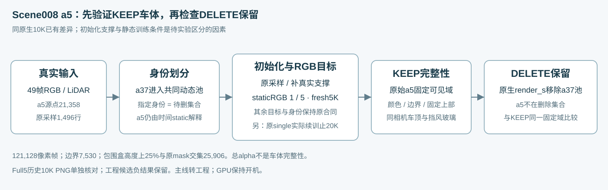
原Single同轨迹续训：15K / 20K / 30K
从未修11977完整状态延续，保持原初始化、目标、动态身份和30K学习率时钟；不重新训练已花的1977步。新计划仅新增18,023更新，未有完成回执的部分不计入历史已花账。这个控制只检验本轨迹的训练时长。
| 实际iteration / 节点 | 状态 | KEEP MAE | 边界 MAE | 固定上部 MAE |
|---|---|---|---|---|
| 仅 a37 · 原10K | 49帧已核验 | 0.06210 | 0.05440 | 0.11551 |
| 原single · 11977工程节点 | 49帧已核验 | 0.04357 | 0.04277 | 0.08116 |
| 原single续训 · 15K | 待评价/取回 | — | — | — |
| 原single续训 · 20K | 待评价/取回 | — | — | — |
| 原single续训 · 30K | 待评价/取回 | — | — | — |
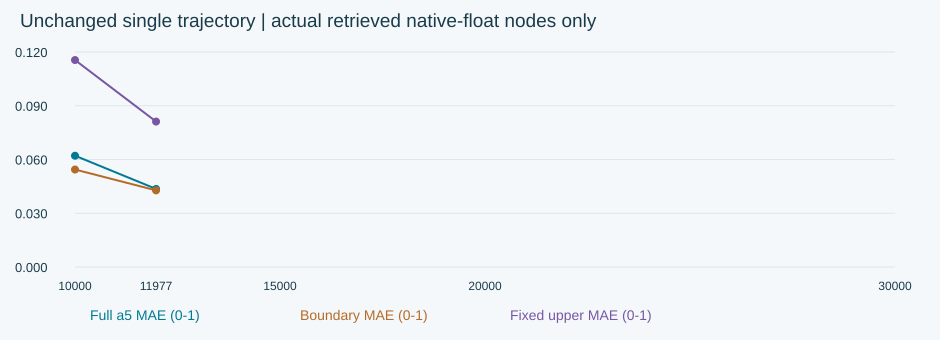
曲线只包含已核验的原生浮点评价节点；不存在的15K/20K/30K值保持空白，未插值或外推。11977是既有工程节点；均值下降仍需与同帧车顶图片一起判断。
静态RGB监督强度消融：初始化 × scalar 1 / 5
两条新5K臂只将全static域RGB scalar从1改到5；原global RGB系数1保留，a5静态像素的名义global＋static RGB系数由2变6。它影响背景，且不等于复制动态分支的alpha100、mask域、时间扰动或其他先验。a5保持static，a37共同动态池及删除语义不变。
| 初始化 / staticRGB | 名义global＋static系数 | 5K状态 | KEEP MAE | 边界 MAE | 固定上部 MAE | raw105 MAE |
|---|---|---|---|---|---|---|
| 原采样支撑 · staticRGB=1 | 2 | 49帧已核验 | 0.09053 | 0.07459 | 0.15676 | 0.09995 |
| 完整真实支撑 · staticRGB=1 | 2 | 49帧已核验 | 0.08135 | 0.06781 | 0.14462 | 0.09858 |
| 原采样支撑 · staticRGB=5 | 6 | 待评价/取回 | — | — | — | — |
| 完整真实支撑 · staticRGB=5 | 6 | 待评价/取回 | — | — | — | — |
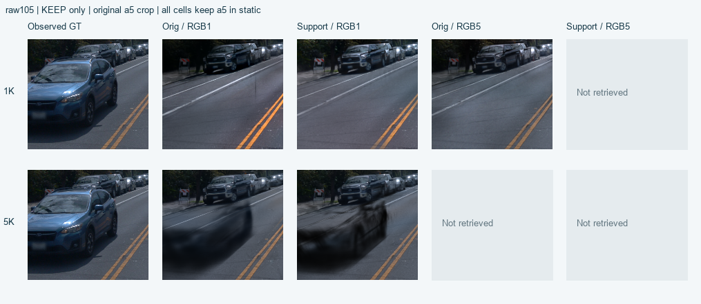
| 描述性差值（MAE） | scalar1下补点差值 | 补点边际差 | RGB配重边际差 | 交互项 |
|---|---|---|---|---|
| 全a5 MAE | -0.00918 | — | — | — |
| 边界 MAE | -0.00678 | — | — | — |
| 固定上部 MAE | -0.01214 | — | — | — |
y00=原采样/1，y10=补点/1，y01=原采样/5，y11=补点/5；交互=(y11−y10)−(y01−y00)。边际差为另一因素两水平的平均差，误差差值为负表示下降；缺格不填。仅单场景单seed描述，不做统计显著性结论。
既有scalar1两臂与新增scalar5两臂构成2×2。提高RGB系数也会相对弱化未变系数的静态duration/velocity等项；若恢复，只能归因这项目标平衡干预有效，不能独立排除prior的作用。补点同时改变支撑、局部密度/容量与KNN初始scale；只有一场景、一seed。完整日程与唯一配重差异审计到达前，不把四格数值当成已完成因果验证。
1K早期检查（单独列示，不作为5K终点）
| 1K节点 | 证据 | KEEP MAE | 固定上部 MAE | 平均总alpha |
|---|---|---|---|---|
| 原采样支撑 · staticRGB=1 · 1K | 49帧已核验 | 0.22772 | 0.23154 | 0.57898 |
| 完整真实支撑 · staticRGB=1 · 1K | 49帧已核验 | 0.22533 | 0.19457 | 0.67494 |
| 原采样支撑 · staticRGB=5 · 1K | 49帧已核验 | 0.21972 | 0.20134 | 0.32643 |
| 完整真实支撑 · staticRGB=5 · 1K | 待评价/取回 | — | — | — |
平均误差或总alpha变化不能替代车体目视；已取回的RGB5原采样1K中仍几乎没有可辨a5车体。本轮代理目视记录（人类判定为空）
仅CPU准备的备选分支对照：未入队、KEEP-only
若当前2×2结果需要，root再决定是否使用原生a5+a37动态分支诊断；此处没有自动启动。a5的21,358个唯一归一化xyz/time与fullsupport相同，但静态原生0.1m排除还移走2,053个非精确a5匹配的近邻行，其语义未知。加54重复行差异，总点数710,040对707,933（约0.30%）。KNN域和原生目标/分支责任整包改变，不能独立隔离prior。原生DELETE会删a5+a37，仅KEEP可用于此诊断，不是a37-only编辑方案。CPU合同/取回清单 · 输入准备源码
本轮授权（GPU保持开机） · 研究合同 · 监督强度消融合同 · 2×2实际配对审计：待取回 · 固定上部CPU汇总源码
新研究指标与可识别性边界
49帧均为训练视图重建诊断，并非独立泛化评价；a5只在raw89..112的24帧中有固定可见像素。全域121,128、内侧1px边界7,530、固定上部25,906像素帧。上部由原mask包围盒高度上25%确定，不是按render或误差挑像素。KEEP完整性与DELETE变化分别记录；总alpha不能证明车体完整。Full5 cached PNG继续单列，不并入新float表。human_verdict为空。
{
"task_id": "SCENE008-A5-IDENTITY-COUPLING-RESEARCH-20261107",
"status": "AUTHORIZED_EXECUTION_IN_PROGRESS",
"date_timezone": "2026-11-07 Asia/Singapore",
"user_direction": "Keep GPU powered on; research why changing the identity set degrades reconstruction of retained a5. Focus initialization and training targets, verified by experiments.",
"power_action": "KEEP_INSTANCE_ON_NO_SHUTDOWN",
"known_evidence": {
"matched_cached_native10k": "Full5 retains blurred roof/windshield; single-a37 visibly loses structure. Cached PNG comparison, separate from fresh-float metrics.",
"initial_a5_full_source_unique_xyz_time": 21358,
"single_sampled_a5_rows": 1496,
"single_sampled_a5_unique_xyz_time": 1442,
"support_intervention_added_unique_actual_rows": 19916,
"prior_support5k_result": "All49 fixed-mask MAE 0.0905295688 -> 0.0813456506; raw105 0.0999514152 -> 0.0985846240. Agent visual inspection did not find restored roof.",
"prior_candidate_fixes": "time-shift and screen-radius continuation trials did not repair a5; neither is adopted."
},
"questions_and_controls": [
{
"id": "Q_LENGTH",
"question": "Does the original single-a37 trajectory recover retained a5 by30K?",
"intervention": "Exact full-state continuation of unchanged native single from11977 to30000, milestones15000/20000/30000.",
"held_fixed": [
"original initialization",
"all losses",
"seed and restored sampler/RNG",
"30K LR clock",
"native engine",
"dynamic/delete identity a37"
],
"reuse": "Existing683.85s real-GPU smoke11977 plus full restore/eval/next-entry evidence. Runner verifies applicability; additional required engineering work is separately counted.",
"planned_new_updates": 18023,
"boundary": "Tests this trajectory and budget; does not isolate support or supervision."
},
{
"id": "Q_RGB_SUPPORT",
"question": "Do source support and static-RGB supervision strength explain early a5 degradation?",
"design": "2x2: original sampled vs appended complete a5 support; native staticRGB weight vs increased staticRGB weight. Two native5K arms already exist; two new5K arms planned.",
"planned_single_change": "static RGB scalar1->5 only, pending actual-code multiplier/domain verification",
"held_fixed": [
"a5 remains static",
"a37 remains dynamic/deleted",
"all duration/velocity/opacity priors",
"seed/camera/time-shift sequence",
"SGCM/NPS/densification and 30K LR horizon",
"input per support cell"
],
"planned_new_updates": 10000,
"save_eval_resume_nodes": [
1000,
5000
],
"boundary": "One scene and seed; support intervention changes capacity and KNN scale as well as geometry. Static-RGB scalar applies to the whole static domain; it is not an actor-specific intervention."
}
],
"evaluation": {
"frames": "raw89..137 inclusive,49 native480x320",
"a5_mask": "actor_labels==1 from frozen observations",
"fixed_pixel_frames": 121128,
"inner_1px_boundary_pixel_frames": 7530,
"upper_bbox25_percent_pixel_frames": 25906,
"anchors": [
89,
97,
105,
109
],
"primary": "Fresh floating-point KEEP/DELETE fixed-mask RGB MAE and raw105/upper-region values; agent visual body/roof checks are separate from user verdict.",
"supporting": "Full-frame L1/PSNR/SSIM/LPIPS; no clean-delete GT; alpha alone is not completeness.",
"human_verdict": null,
"efficiency_preference_20261107": {
"user_direction": "New candidates may first check a few frames and expand to49 after basic checks pass; already-running49-frame evaluations can continue.",
"pilot_raw_frames": [
97,
105,
109
],
"training_sampling": "Original49-frame training contract stays unchanged.",
"pending_longrun": "Do not interrupt/restart an already-launched native longrun just to change evaluation routing.",
"reporting": "Pilot and all49 results use separate labels and actual denominators."
}
},
"accounting": {
"prior_formal_updates": 20000,
"prior_engineering_updates": 6599,
"prior_total_new_updates": 26599,
"planned_increment_formal_updates": 28023,
"planned_increment_engineering_updates": "Only if lifecycle/recovery requires extra work; record actual execution, do not double count reused1977."
},
"failure_ledger_refs": [
"V82-F06"
],
"causal_mechanism_established": false,
"execution_notes": [
"Preserve historical artifacts and source checkpoints.",
"Do not reinterpret old goal authorization as current shutdown authority.",
"Do not pursue code-history archaeology as the main line.",
"After these controls, use actual results to decide the next bounded hypothesis; do not automatically combine several mechanisms."
]
}Round1：初始化支撑单变量实验（已完成5K）
停止继续追代码改动，直接检验a5退出动态池后的真实观测支撑。两组都从头训练，使用原未修engine、仅a37动态、a5仍在static；Control沿用原single输入，Support只补入原a5完整21,358真实源点中缺失的xyz＋time观测，原sample的1,496行全部保留。
损失、采样、30K学习率horizon和删除语义保持原合同；1K先看片，5K终点。输入合同核对追加19,916真实行；原1,496行中有1,442个唯一xyz＋time，保留重复采样后，a5共21,412行、覆盖21,358个唯一真实观测。static初始池591,672→611,588（＋3.366%），全模型初始池690,124→710,040（＋2.886%）。这是支撑与局部密度/容量干预，不是同点数几何对照。原生KNN会随新增邻点重新计算初始scale，不主张旧参数逐项相同；也不先预判补点会修复。两个既有代码候选负结果保留在下方，不与此实验叠加。
Round1完成：补齐真实支撑有一定支持作用，但5K未修复a5。全49固定域误差下降10.1%，raw105仅下降1.4%；两张已目视的raw105车顶/挡风玻璃仍不完整，Support只增加了暗色轮廓。两组raw105总alpha≥0.5覆盖均为100%，仍不能代表车体完整。5000次实际camera/shift完全相同；这轮不能排除支撑与监督的联合作用。
| 新实验组 / 节点 | 当前证据 | 全49 KEEP MAE | 边界 KEEP MAE | 固定上部 KEEP MAE | raw105 KEEP MAE | KEEP↔DELETE变化 |
|---|---|---|---|---|---|---|
| Control：原单车输入 1K | 49帧已核验 | 0.22772 | 0.20821 | 0.23154 | 0.22118 | 0.0002294 |
| Support：真实a5支撑 1K | 49帧已核验 | 0.22533 | 0.20820 | 0.19457 | 0.21262 | 0.0001665 |
| Control：原单车输入 fresh5K | 49帧已核验 | 0.09053 | 0.07459 | 0.15676 | 0.09995 | 0.0002520 |
| Support：补齐真实a5源点 fresh5K | 49帧已核验 | 0.08135 | 0.06781 | 0.14462 | 0.09858 | 0.0003067 |
RGB MAE均为0–1通道均值、越小越好；边界7,530像素帧。固定上部是原始a5 mask包围盒高度上25%与该mask的交集（25,906像素帧），由固定GT确定，不按render选择，也不是语义车顶真值。
已实际核对1K raw105：两组KEEP中蓝色SUV均几乎尚未形成，数值略有变化不等于车顶或挡风玻璃恢复。1K结论与5K终点评价分列。
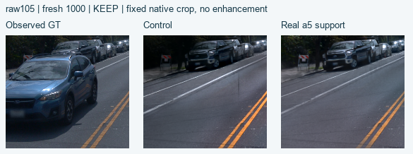
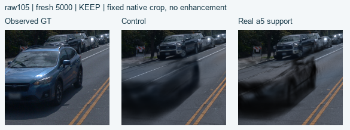
Control5K评价 · Support5K评价 · Control1K先看片 · Support1K先看片 · 真实支撑输入合同与CPU核对 · 1K实际日程与配对摘要 · 5K实际日程与配对摘要 · 历史有界验证授权（已被新指令覆盖）


先依据同相机1K/5K图片观察车顶与挡风玻璃；结果未到时不填写改善结论。新实验账本与上一代码诊断阶段的正式10000／工程6599分开记录。旧回执中的权限只描述当时现场，后续执行与资源收尾以最新授权登记为准。
本轮范围与资源收尾授权（以最新登记为准）
{
"status": "ACTIVE_RESEARCH_VALIDATION",
"recorded_utc": "2026-11-07T00:08:15.979828+00:00",
"latest_user_instruction_paraphrase": "Resume research. Keep the GPU instance on. Do not use a reset card and do not shut down.",
"current_actions": {
"keep_GPU_instance_on": true,
"use_reset_card": false,
"shutdown": false,
"create_goal": false
},
"research_questions": [
"Whether the existing native single trajectory recovers a5 with continued training to30K.",
"How real a5 initialization support and staticRGB supervision weight interact while a5 remains static."
],
"new_authorized_experiments": {
"single_exact_continuation": {
"from_iteration": 11977,
"to_iteration": 30000,
"evaluation_iterations": [
15000,
20000,
30000
]
},
"initialization_by_static_rgb_2x2": {
"initialization_levels": [
"original sampled support",
"append missing19916 real a5 rows"
],
"static_rgb_weights": [
1,
5
],
"fresh_updates_per_arm": 5000,
"weight1_arms_already_completed": true,
"weight5_arms_results": "not yet available"
}
},
"historical_events": [
{
"event": "bounded validation instruction",
"source": {
"path": "evidence/new_goal_authorization.json",
"bytes": 1063,
"sha256": "9616eb334790fd597d8ab6217f8882c7e80cc4e130bb880ebb313e8a9f5c1f74"
},
"current": false
},
{
"event": "goal paused and then cleared; report finalization was stopped",
"source": "parent task instruction in this conversation",
"exact_event_time_not_recorded_here": true,
"current": false
},
{
"event": "research resumed with explicit keep-on / no-card / no-shutdown instruction",
"source": "latest parent task relaying user instruction",
"current": true
},
{
"event": "Later evaluations should start with a few frames, then expand; existing full49 evaluations may continue",
"source": "latest user instruction relayed by parent",
"recorded_utc": "2026-11-07T00:16:59.624714+00:00",
"current": true
}
],
"precedence": "This appended research authorization supersedes historical shutdown/card/bounded-stop instructions. Original evidence files are retained unchanged.",
"old_authorization_overwritten": false,
"evaluation_efficiency_preference": {
"pilot_raw_ids": [
97,
105,
109
],
"expand_to49_after_pilot_check": true,
"already_running_full49_continue": true,
"training_sampling_contract_raw_ids": "89..137 unchanged",
"pilot_is_not_all49_evidence": true
}
}先把旧逻辑说清楚
旧输入的 points3d_dynamic_*.ply 全部进入共同动态池，对应掩码取并集；原生 render_s 移除整个池。指定 actor 就是这次共同待删集合。仅 a37 / a37+a6 的子集模型中，a5 交给带时间参数的 static/background 解释。
前一诊断阶段沿用Single原10K，完整原始a6（11,625点）与a37（98,452点）完成fresh10K并在5K、10K评价。新研究从未修Single11977节点精确续训，独立列在上方；历史取消延伸与暂停指令不代表当前授权。学习率horizon仍为30K。Full5 B30K仅作既有参考，不能称同训练长度配对；其10K权重已清理，但原生PNG与发布事件仍在，下方另列同10K历史图像核对。
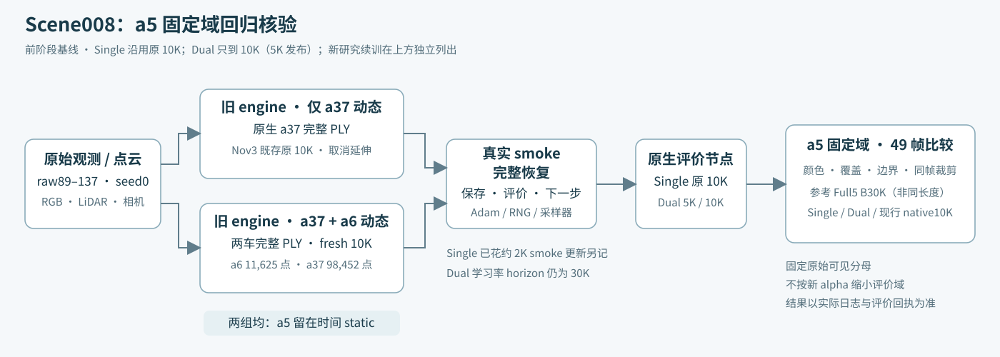
四个锚帧：同一固定裁剪
固定窗口用于定位raw105左侧蓝色SUV（a5）的缺损；raw89时a5主体尚未进入此窗，不能用这一小窗判其完整性。raw97及出窗中的raw109仍能看到形体混合/蓝色残影。这里只做锚帧抽查，不是49帧人工验收。裁剪不改变全图原始a5标签数值域。
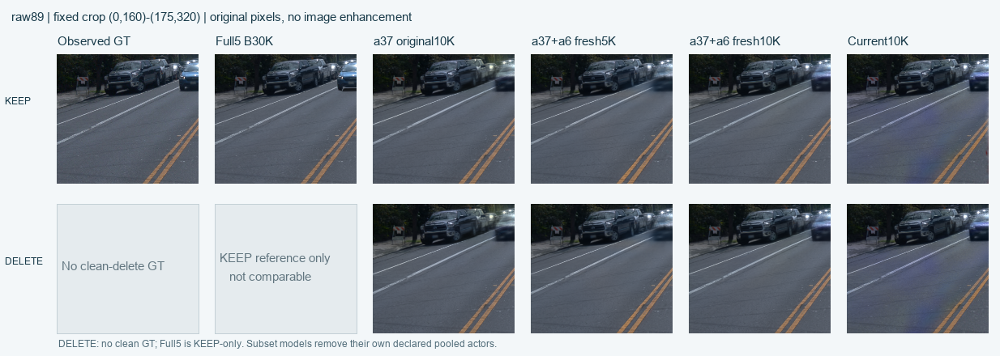
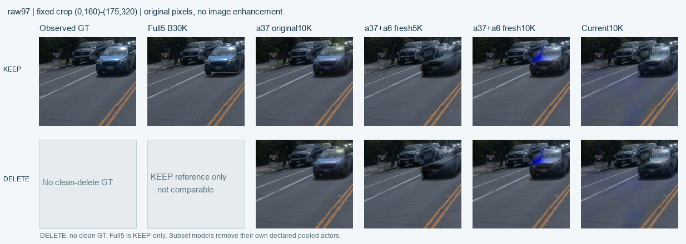
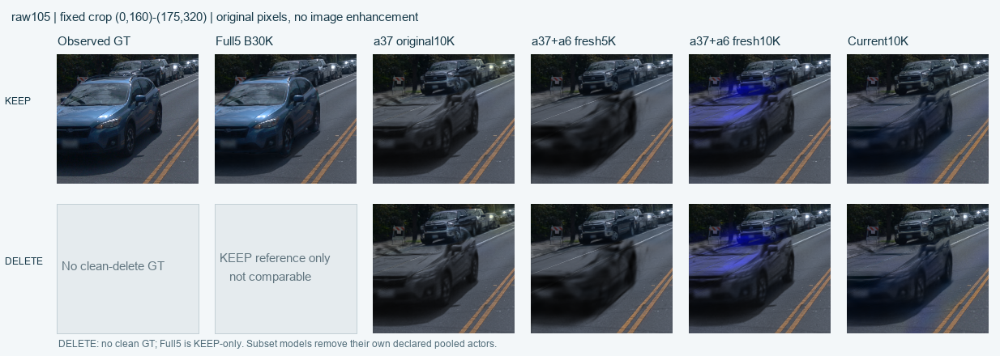
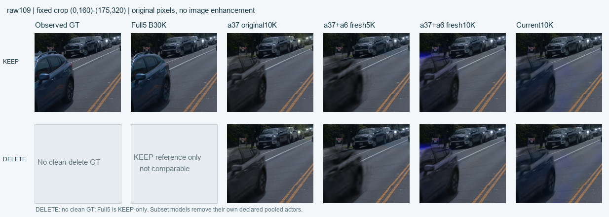
Full5只展示KEEP：历史owner-selective回放不能替代旧子集训练，原生删全五车又会删a5，因此其DELETE格禁用。GT的DELETE格没有整图clean-delete真值。Single删除a37；完整Dual删除a37+a6；Current沿革列只删除a37。各列删除集合不同，不能把DELETE行当成同一编辑任务排名。Full5优先使用新鲜原生49帧；未取回时其KEEP沿用既有四帧回放。

全49帧固定域：颜色与边界
扫描49个训练视图，a5在raw89..112的24帧有原始 actor_labels==1 可见像素，共121,128像素帧；不在场的帧不补造像素。边界为同一标签向内1像素环。RGB MAE为sRGB通道平均绝对误差（0–1，越小越好）；按固定像素数加权。这是重建诊断而非独立泛化评价。新鲜同浮点评价优先，历史4帧数字不填入本表。
| 模型 / 状态 | 可见域像素帧 | KEEP RGB MAE | DELETE RGB MAE | 边界 MAE KEEP / DELETE | KEEP↔DELETE 平均RGB变化 | alpha≥0.5覆盖率 KEEP / DELETE |
|---|---|---|---|---|---|---|
| Full5 B30K（既有参考） 49帧已核验 | 121,128 边界 7,530 | 0.01409 | — 仅KEEP参考 | 0.03594 / — | 不适用 | 1.00000 / — |
| 仅 a37 · 原10K 49帧已核验 | 121,128 边界 7,530 | 0.06210 | 0.06211 | 0.05440 / 0.05445 | 0.0000424 | 1.00000 / 1.00000 |
| 完整 a37+a6 · 5K 49帧已核验 | 121,128 边界 7,530 | 0.09091 | 0.09091 | 0.07356 / 0.07353 | 0.0001848 | 0.99943 / 0.99941 |
| 完整 a37+a6 · 10K 49帧已核验 | 121,128 边界 7,530 | 0.05903 | 0.05904 | 0.05248 / 0.05249 | 0.0000233 | 1.00000 / 1.00000 |
| Current 原生10K（沿革） | 仅历史4帧沿革 | |||||
总alpha可被道路、背景或错误表面补满。覆盖率高、删车前后平均变化小，都不能单独证明a5车顶完整、深度正确或所有权正确。
历史四帧原始数字：仅作沿革，不冒充49帧
| 来源 | raw | 操作 | a5像素 | RGB MAE | 相对KEEP变化 | 平均alpha |
|---|---|---|---|---|---|---|
| Full5 B30K（既有参考） | 89 | keep | 1227 | 0.02200 | 0.0000000 | 0.99988 |
| Full5 B30K（既有参考） | 89 | delete_a37_a6 | 1227 | 0.02193 | 0.0000670 | 0.99988 |
| Full5 B30K（既有参考） | 97 | keep | 3010 | 0.01426 | 0.0000000 | 0.99989 |
| Full5 B30K（既有参考） | 97 | delete_a37_a6 | 3010 | 0.01426 | 0.0000000 | 0.99989 |
| Full5 B30K（既有参考） | 105 | keep | 10773 | 0.01308 | 0.0000000 | 0.99989 |
| Full5 B30K（既有参考） | 105 | delete_a37_a6 | 10773 | 0.01308 | 0.0000000 | 0.99989 |
| Full5 B30K（既有参考） | 109 | keep | 8178 | 0.02462 | 0.0000000 | 0.99989 |
| Full5 B30K（既有参考） | 109 | delete_a37_a6 | 8178 | 0.02462 | 0.0000000 | 0.99989 |
| 仅 a37 · 原10K | 89 | native_keep | 1227 | 0.04765 | — | 0.88806 |
| 仅 a37 · 原10K | 89 | native_delete | 1227 | 0.04791 | 0.0007551 | 0.88791 |
| 仅 a37 · 原10K | 97 | native_keep | 3010 | 0.03806 | — | 0.95502 |
| 仅 a37 · 原10K | 97 | native_delete | 3010 | 0.03811 | 0.0001191 | 0.95501 |
| 仅 a37 · 原10K | 105 | native_keep | 10773 | 0.08328 | — | 0.98272 |
| 仅 a37 · 原10K | 105 | native_delete | 10773 | 0.08328 | 0.0000010 | 0.98272 |
| 仅 a37 · 原10K | 109 | native_keep | 8178 | 0.03946 | — | 0.98768 |
| 仅 a37 · 原10K | 109 | native_delete | 8178 | 0.03946 | 0.0000000 | 0.98768 |
| Current 原生10K（沿革） | 89 | native_keep | 1227 | 0.09729 | — | 0.89138 |
| Current 原生10K（沿革） | 89 | native_delete | 1227 | 0.03754 | 0.0640604 | 0.87201 |
| Current 原生10K（沿革） | 97 | native_keep | 3010 | 0.06001 | — | 0.90515 |
| Current 原生10K（沿革） | 97 | native_delete | 3010 | 0.05854 | 0.0019962 | 0.90487 |
| Current 原生10K（沿革） | 105 | native_keep | 10773 | 0.08538 | — | 0.97226 |
| Current 原生10K（沿革） | 105 | native_delete | 10773 | 0.08538 | 0.0000000 | 0.97226 |
| Current 原生10K（沿革） | 109 | native_keep | 8178 | 0.03072 | — | 0.98138 |
| Current 原生10K（沿革） | 109 | native_delete | 8178 | 0.03072 | 0.0000000 | 0.98138 |
Full5删除两车来自历史owner-selective工程分配，不是单/双对象子集训练，不参与主比较。以上独立脚本的浮点/clamp口径与新表不保证一致；不混合计算全49帧均值。
同10K历史PNG证据（独立口径）
Full5 B10K的四件权重虽已清理，原生checkpoint发布事件和49帧PNG仍保留。这里仅对已存原生uint8 PNG，与Single10K的已存PNG按相同原始mask、相机和时间做CPU核对；未恢复或重新渲染Full5 10K权重。
两套已有原生PNG在同10K、同49相机/时间与固定121128像素域的CPU核对已通过。
| 历史PNG来源 | 帧 / 可见像素 | KEEP RGB MAE | 内边界像素 | 边界KEEP MAE | 权重状态（本次均未加载） |
|---|---|---|---|---|---|
| Full5 cached 10K | 49 / 121128 | 0.03304 | 7530 | 0.06641 | 四件权重已清理 |
| Single cached 10K | 49 / 121128 | 0.06211 | 7530 | 0.05440 | 仍在 |
全可见域里Full5 cached10K误差较低，但其边界误差反而较高；不能挑一个指标称全面更好。同10K减少了训练长度混淆，仍未单独隔离输入支撑、监督责任/损失与RNG轨迹差异，不能据此认定唯一代码根因。
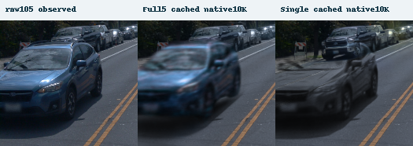
本节RGB MAE为PNG uint8/255相对固定float观测RGB的通道平均绝对误差，单位0–1；不是原生float重放分数。该证据不是隐藏表面真值，不混入新鲜float主表。
单车并行排查：现象、分支行为与候选验证分开
仅a37原10K与额外1977步的未修11977都在KEEP中缺顶。11977的全49帧MAE虽由0.062096降至0.043573，车顶仍明显缺失，前上方还有蓝色半透明/错位残影；这不是已恢复的车体。
raw105固定上部2091像素：10K→11977的KEEP MAE 0.18166→0.13905，总alpha均值 0.96622→0.98649；alpha≥0.5均为100%，图中车顶仍缺失并有蓝色错位残影。
| 当前判定 | 已复现证据 | a5因果与本轮处理 |
|---|---|---|
| 分支行为 / 候选接线缺陷 static time_shift | 原10K实际有5119次非零shift；原static输出变化为0，dynamic正常响应。候选仅移除两处覆写None，None-shift输出保持不变。 | 上游2024已有该不对称；缺少static必须与dynamic采用相同自监督的设计合同。尚未证明它造成a5缺损，下面只做单变量候选验证。 |
| 已复现实现缺陷 screen-radius统计清零 | densify先清零max_radii2D，再检查max_screen_size；CPU半径[100,1]、阈值20，正常路径应删1却删0，prune_only对照删1。 | a5因果未知。当前正式主实验及该time-shift候选回放均未施加此项修复；不把两项改动堆叠。 |
检查点审计未发现所查几何/时间/opacity参数的NaN或Inf；10K→11977尚未跨12K opacity-reset节点。两快照不能定位唯一有害训练事件。投影支持proxy也不能当成CUDA逐像素归因。
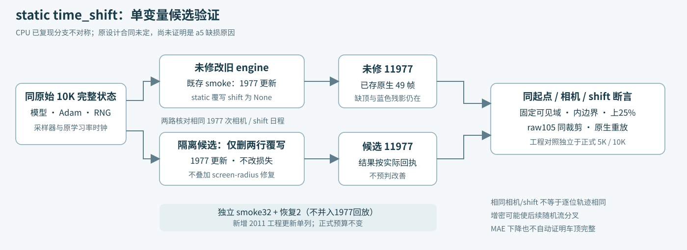
隔离工程对照（不进入正式5K/10K表）
负结果：time-only全可见域KEEP MAE上升15.1%，raw105未见车顶恢复，本轮明确不采纳为a5修复。工程PASS仅证明配对和执行完成。配对断言与固定域核验已通过。候选−未修的 ΔMAE：全可见域 0.0065914，边界 0.0065168，上25% 0.0110544。负值仅表示该数值下降，不自动表示车顶恢复。
共同完整起点：通过；1977次相机/shift日程：通过。即使相机/shift相同，也不宣称增密后的随机流和逐位轨迹完全相同。
| 工程角色 | 全49可见域 KEEP RGB MAE | 固定内边界 KEEP MAE | 原mask上部区域 KEEP MAE（定义见下） | 全49 KEEP↔DELETE 平均RGB变化 |
|---|---|---|---|---|
| 仅 a37 · 原10K | 0.06210 | 0.05440 | 0.11551 | 0.0000424 |
| 未修11977（既存smoke1977步） | 0.04357 | 0.04277 | 0.08116 | 0.0000226 |
| time-only11977（隔离1977步回放） | 0.05016 | 0.04928 | 0.09222 | 0.0000244 |
上部区域＝原始a5 mask包围框高度上25%与该mask的交集；阈值只由固定GT mask决定，不是按像素数取最上25%，也不是render选择。当前计数25906 / 121128（21.4%），不是语义车顶真值。数值只从已保存float计算，缺float保持空缺；没有用PNG估算。
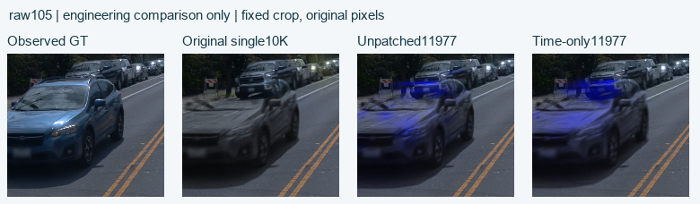
未修1977步属于此前smoke。time-only另有32步真实smoke＋2步恢复探针＋1977步隔离回放，共2011工程更新；正式预算不变。完整回执到达才记完成；工程完成和科学修复通过是两件事。
第二个独立代码验证：screen-radius窗口
已复现的缺陷是普通densify先清零累计屏幕半径，令原max_screen_size裁剪失效。候选只在gaussian_model内两处调整：postfix保留旧行半径、新行置0；普通prune消费后清空窗口。prune_only及阈值None/0的原语义保留。CPU18案例通过仍不证明a5因果。
该半径次序继承旧实现，历史V82-F06已记录append会重置半径、不能冒称持续屏幕大点约束。本次18例CPU、128步真实GPU与1977步回放是补充其对a5恢复作用的证据，不是新引入commit或新科学发现；不改变原a6/RCR-1采用范围。
这是从同一原10K另起的screen-only回放，不是在time候选上继续。renderer保持原35b版本；actor、20px阈值、损失、采样、学习率不变，不叠加time_shift改动。
负结果：screen-only全域KEEP MAE上升26.6%，raw105仍缺顶、暗糊并有蓝色残影；该模型不采纳为a5修复。screen-only配对、固定域和独立源码合同已核验。候选−未修 ΔMAE：全域 0.0115690，内边界 0.0064402，原mask上部 0.0130570。这是工程回放数值，不自动证明a5已修复。
| 独立工程角色 | 全49 KEEP MAE | 固定内边界 MAE | 原mask上部 MAE | 全49 KEEP↔DELETE变化 |
|---|---|---|---|---|
| 未修11977（共同旧基线） | 0.04357 | 0.04277 | 0.08116 | 0.0000226 |
| screen-only11977（独立1977回放） | 0.05514 | 0.04921 | 0.09422 | 0.0000285 |
使用与第一工程区相同的原mask固定域及包围框高度上25%交集；各候选分别核对完整起点、1977次相机/shift、原观测与源码隔离。两个候选的结果不进入正式5K/10K表。
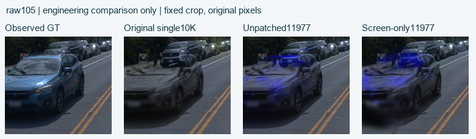
全画面原生49训练视角重建
| 独立工程端点 | PSNR / dB ↑ | SSIM ↑ | LPIPS ↓ | RGB L1 ↓ |
|---|---|---|---|---|
| 未修11977 | 34.1216 | 0.95641 | 0.06123 | 0.010783 |
| screen-only11977 | 31.3013 | 0.93233 | 0.09665 | 0.014863 |
screen-only的全局重建也退化；正确修复统计窗口不等于该回放模型达到a5或全场景质量要求。这些仍是训练视角指标，不是独立泛化结果。
候选的18例CPU与真实GPU128步（覆盖首个10100变更节点）、完整恢复及下一入口可以通过工程验收；这不升级为a5质量通过。
新增工程预算128步真实smoke＋2步恢复＋1977步回放＝2107；首个10100增密节点需覆盖变更代码。正式新增仍只有Dual 10,000步，Single不追加。若两个候选均完整完成，工程总数为2481＋2011＋2107＝6599；这个条件总数不是pending部分的完成声明。
已有完整回执可确认的工程更新：6599；运行中/缺回执部分另记，不等于其实际消耗为0。
最早形成与后续退化：两个问题不能混为一谈
已存Single 1K图就有车顶欠重建，尚无证据表明完整车顶曾先形成后被删除。static首次opacity reset在3K，9K reset最多影响后续恢复，不能单独解释1K现象。20px屏幕裁剪要求iteration>3000且为100的倍数，最早3100启用，因此该bookkeeping缺陷也不能单独解释最早1K欠顶。
time-only从原10K出发的短回放负结果，只说明本轮候选未修好，不等于排除它从头训练时的贡献。screen统计缺陷可复现，但其修复模型仍失败；不能把代码正确性证明替代a5根因证明。
当前线索落在a5退出dynamic后，原始观测支撑、监督责任/权重和静态时间表示共同改变，尚不能唯一归因某个commit。两个代码候选短回放未修复a5。已完成的补真实支撑5K有有限改善但不足以恢复车顶；新研究分别检验原轨迹训练时长与全static域RGB监督强度，不预判训练条件的因果作用。
目前可以说到哪里
raw105 的历史原生 KEEP 对照已显示：Full5 B30K中的a5较完整，仅a37原10K中的a5车顶已经缺损；缺损早于后加道路和完整a6资产替换。这个时间顺序支持先检查训练输入与表示分配，但尚不能区分训练长度、初始支撑、监督分支和随机轨迹各自的作用。
Nov4双对象试验只把1,023个a6种子从static迁入dynamic，不能代表本轮完整11,625点a6输入。3fefd98等配方提交只能帮助定位历史，不能在没有逐版本对照的情况下称为确切bug提交。
历史证据与未决项
[ "本次本机证据链未找到10月raw89-137的only-a37或完整a37+a6历史30K权重；不能把Full5 B30K重命名为它们。", "旧Full5与现行两对象在动态集合、a5解释分支、训练更新量上不同；旧截图不能单独区分代码回归、表示分配或10K未收敛。", "旧fullclip的道路修复10K与原生模型训练10K含义不同；比较必须标明原生模型和道路层来源。", "a5保留种子或平均删除MAE很小，不等于车体完整。需要固定原始a5可见域、边界、覆盖、深度和全49帧同相机比较。", "本文件及architecture.svg只保存已知历史和后续执行合同，不包含2026-11-06新实验结果。" ]
{
"schema_version": 1,
"audit_timestamp_utc": "2026-11-05T17:13:11.927903+00:00",
"status": "PASS_SOURCE_AND_CPU_INPUT_AUDIT_RUNTIME_SMOKES_TRACKED_SEPARATELY",
"auditor": "remote_history independent read-only audit; dual preparation was authored earlier by the same agent and is explicitly rechecked against original assets here",
"audit_GPU_used": false,
"audit_training_updates": 0,
"remote_audit_file_writes": 0,
"shutdown_performed": false,
"current_source_snapshot_stable_during_audit": true,
"latest_user_budget": {
"active_budget": {
"status": "ACTIVE_USER_REDUCED_BUDGET",
"single_new_formal_updates": 0,
"single_reference_formal_iteration": 10000,
"dual_fresh_stop": 10000,
"dual_phase_stops": [
5000,
10000
],
"dual_checkpoint_eval_nodes": [
5000,
10000
],
"iterations_configuration": 30000,
"learning_rate_horizon": 30000,
"smoke_accounting": "all smoke and two-step replay updates are separate from formal",
"dual_smoke_time_policy": "500 real updates; forecast from actual throughput and historical1730s single10K scaled by full point ratio plus240s diagnostics; if forecast>=3600s extend smoke to>=540s",
"dual_5k_action": "complete checkpoint, independent zero-update a5 evaluation and four anchors, then exact full-state resume to at most10K",
"root_names_containing_30k": "existing directory identifiers only; not an active training budget",
"old_30k_launchers_disabled": true,
"automatic_shutdown_allowed": false
},
"root_names_containing_30k_are_existing_filesystem_identifiers": true,
"single_new_formal_updates": 0,
"single_reference_iterations": 10000,
"dual_fresh_formal_stop": 10000,
"dual_user_requested_save_evaluate_nodes": [
5000,
10000
],
"learning_rate_horizon": 30000,
"smoke_and_engineering_replay_updates_separately_accounted": true,
"single_wrapper_mode_choices": [
"smoke",
"resume2step"
],
"old_single_master_disabled": true,
"dual_phase0_requires_fresh_5000": true,
"dual_phase1_requires_exact_5000_to10000": true,
"active_master": "/root/autodl-tmp/drivingeditor_repro/campaign/scene008_a5_old_single30k_20261106_r1/source/run_short_campaign.py",
"active_dual_queue": "/root/autodl-tmp/drivingeditor_repro/campaign/scene008_a5_old_dual30k_20261106_r1/source/run_dual_short_queue.py",
"earlier_30k_continuation_plan_superseded": true
},
"historical_search": {
"outcome": "NO_COMPATIBLE_PRE_NOVEMBER_SINGLE_OR_DUAL_089_137_RUN_FOUND_IN_INSPECTED_SCOPE",
"not_a_proof_of_nonexistence": true,
"scope": [
"campaign top-level inventory",
"90 October effective_config.json records found by a bounded metadata walk",
"small dynamic_multi_actor_preparation.json inventories under campaign",
"selected Git messages and readable October worldsim_v82 recipe files",
"/root/autodl-tmp/motion_proj_v82_gn11_v42/docs/autoresearch/scene008_rcr1_20261105/followup_a5/evidence/git_history_followup/trace.md",
"/root/autodl-tmp/motion_proj_v82_gn11_v42/docs/autoresearch/scene008_rcr1_20261105/followup_a5/evidence/git_history_followup/verified_trace.json"
],
"exclusions": "The bounded walk excluded runtime/environment/site-packages/node_modules/.git/images/visualization/evaluation/cache/mask/depth/RGB output subtrees and new scene008_* campaign roots during the October scan; this was not a byte-for-byte exhaustive archival search.",
"old_089_137_three_actor": {
"path": "/root/autodl-tmp/drivingeditor_repro/campaign/nearby_actors_20261015_v1/inputs/scene0008_089_137/dynamic_multi_actor_preparation.json",
"aliases": [
5,
26,
18
],
"dynamic_points": [
21355,
15281,
2484
]
},
"old_089_137_full5": {
"path": "/root/autodl-tmp/drivingeditor_repro/campaign/nearby_actors_20261015_v1/baseline_engineering_20261018/full5_pipeline/inputs/scene0008_089_137/dynamic_multi_actor_preparation.json",
"aliases": [
5,
26,
18,
6,
37
],
"dynamic_points": [
21358,
15193,
2444,
11625,
98452
]
},
"old_all_vehicle": {
"path": "/root/autodl-tmp/drivingeditor_repro/campaign/nearby_actors_20261015_v1/baseline_engineering_20261018/all_vehicle_pipeline/inputs/scene0008_089_137/dynamic_multi_actor_preparation.json",
"actor_count": 20
},
"older_two_actor_other_window": {
"window": [
23,
71
],
"path": "/root/autodl-tmp/drivingeditor_repro/campaign/followup_scene_prep_20261013/inputs/scene0008_023_071_hybrid_cpu_v1/dynamic_multi_actor_preparation.json",
"tracks": [
"NoQttdyd4C16Y_zkGhiFKg",
"fXVhuN-RuJDvZwnkQ-0YSQ"
],
"descriptions": [
"blue_GMC_pickup",
"gray_Jeep_SUV"
]
},
"first_archived_single_recipe_commit": "3fefd98ecf5dfd5a73898bf46717cc8afe4ca147",
"commit_interpretation": "First recipe archival evidence, not a recorded runtime HEAD or isolated causal bug commit.",
"november_dual_not_full_original_PLY": {
"path": "/root/autodl-tmp/drivingeditor_repro/campaign/scene008_a6_a37_dynamic_20261104_r1/formal_dual_actor_r1/initial_parameter_transfer.json",
"moved_a6_static_rows": 1023,
"full5_a6_dynamic_source_rows": 11625
},
"new_dual_is_constructed_control": true,
"new_dual_historical_run_found": false
},
"single_continuation": {
"root": "/root/autodl-tmp/drivingeditor_repro/campaign/scene008_a5_old_single30k_20261106_r1",
"source_checkpoint": "/root/autodl-tmp/drivingeditor_repro/campaign/scene008_a37_only_B10k_20261103_r1/formal10k/chkpnt10000.pth",
"contract": {
"path": "/root/autodl-tmp/drivingeditor_repro/campaign/scene008_a5_old_single30k_20261106_r1/continuation_contract.json",
"resolved_path": "/root/autodl-tmp/drivingeditor_repro/campaign/scene008_a5_old_single30k_20261106_r1/continuation_contract.json",
"exists": true,
"bytes": 3604,
"mtime_ns": 1793897422149124823,
"sha256": "2bd62ef590fb50ddd9836ab9ffb58372dca28c42563e47c6ab7643e55353f109"
},
"original_iterations": 10000,
"current_single_new_formal_updates": 0,
"current_single_reference_iteration": 10000,
"former_continuation_contract": {
"formal_additional_iterations": 20000,
"formal_total_iterations": 30000,
"status": "SUPERSEDED_BY_LATEST_USER_BUDGET_DO_NOT_RELEASE"
},
"learning_rate_horizon_in_saved_original_config": 30000,
"root_config_equals_original_effective_config": true,
"root_config_top_level_differences": [],
"former_formal_allowed_config_differences": [
"model_path",
"start_checkpoint"
],
"single_formal_extension_authorized": false,
"exact_restore_receipt": {
"file": {
"path": "/root/autodl-tmp/drivingeditor_repro/campaign/scene008_a5_old_single30k_20261106_r1/smoke_retry1/restore_audit.json",
"resolved_path": "/root/autodl-tmp/drivingeditor_repro/campaign/scene008_a5_old_single30k_20261106_r1/smoke_retry1/restore_audit.json",
"exists": true,
"bytes": 794,
"mtime_ns": 1793897599627714371,
"sha256": "99dd63601af48fb2edc31828ef92fed40a8a47bce1ce62c3691f8a2bd5909f11"
},
"value": {
"status": "PASS_EXACT_FULL_RESTORE",
"iteration": 10000,
"differences": [],
"includes": "parameters,Adam,Python/NumPy/Torch/CUDA RNG,camera sampler,SGCM,EMA,runtime",
"updates": 0,
"bookkeeping_config_differences": {
"start_checkpoint": {
"saved": null,
"current": "/root/autodl-tmp/drivingeditor_repro/campaign/scene008_a37_only_B10k_20261103_r1/formal10k/chkpnt10000.pth"
},
"model_path": {
"saved": "/root/autodl-tmp/drivingeditor_repro/campaign/scene008_a37_only_B10k_20261103_r1/formal10k",
"current": "/root/autodl-tmp/drivingeditor_repro/campaign/scene008_a5_old_single30k_20261106_r1/smoke_retry1"
}
},
"checkpoint": "/root/autodl-tmp/drivingeditor_repro/campaign/scene008_a37_only_B10k_20261103_r1/formal10k/chkpnt10000.pth"
}
},
"original_checkpoint_source_artifacts": {
"chkpnt10000.pth": {
"expected": {
"path": "/root/autodl-tmp/drivingeditor_repro/campaign/scene008_a37_only_B10k_20261103_r1/formal10k/chkpnt10000.pth",
"bytes": 1205804824,
"sha256": "fe6764f8e1113e3561b2b757064f9e27f04518a0b0a980479263a6fee5275e5a"
},
"actual": {
"path": "/root/autodl-tmp/drivingeditor_repro/campaign/scene008_a37_only_B10k_20261103_r1/formal10k/chkpnt10000.pth",
"resolved_path": "/root/autodl-tmp/drivingeditor_repro/campaign/scene008_a37_only_B10k_20261103_r1/formal10k/chkpnt10000.pth",
"exists": true,
"bytes": 1205804824,
"mtime_ns": 1793685138678879826,
"sha256": "fe6764f8e1113e3561b2b757064f9e27f04518a0b0a980479263a6fee5275e5a"
},
"byte_hash_unchanged": true,
"size_unchanged": true
},
"dynamic_chkpnt10000.pth": {
"expected": {
"path": "/root/autodl-tmp/drivingeditor_repro/campaign/scene008_a37_only_B10k_20261103_r1/formal10k/dynamic_chkpnt10000.pth",
"bytes": 796288990,
"sha256": "93d464d0338b5203bc2ea776f4041044c950bee38b674e49482c656f7b6b14e5"
},
"actual": {
"path": "/root/autodl-tmp/drivingeditor_repro/campaign/scene008_a37_only_B10k_20261103_r1/formal10k/dynamic_chkpnt10000.pth",
"resolved_path": "/root/autodl-tmp/drivingeditor_repro/campaign/scene008_a37_only_B10k_20261103_r1/formal10k/dynamic_chkpnt10000.pth",
"exists": true,
"bytes": 796288990,
"mtime_ns": 1793685141363133667,
"sha256": "93d464d0338b5203bc2ea776f4041044c950bee38b674e49482c656f7b6b14e5"
},
"byte_hash_unchanged": true,
"size_unchanged": true
},
"env_light_chkpnt10000.pth": {
"expected": {
"path": "/root/autodl-tmp/drivingeditor_repro/campaign/scene008_a37_only_B10k_20261103_r1/formal10k/env_light_chkpnt10000.pth",
"bytes": 226494608,
"sha256": "f3c81d0eedbae6c422eb3d3389b4950a9c1752c7818566caf548f9a116f2d577"
},
"actual": {
"path": "/root/autodl-tmp/drivingeditor_repro/campaign/scene008_a37_only_B10k_20261103_r1/formal10k/env_light_chkpnt10000.pth",
"resolved_path": "/root/autodl-tmp/drivingeditor_repro/campaign/scene008_a37_only_B10k_20261103_r1/formal10k/env_light_chkpnt10000.pth",
"exists": true,
"bytes": 226494608,
"mtime_ns": 1793685142603250932,
"sha256": "f3c81d0eedbae6c422eb3d3389b4950a9c1752c7818566caf548f9a116f2d577"
},
"byte_hash_unchanged": true,
"size_unchanged": true
},
"training_state10000.pth": {
"expected": {
"path": "/root/autodl-tmp/drivingeditor_repro/campaign/scene008_a37_only_B10k_20261103_r1/formal10k/training_state10000.pth",
"bytes": 43800,
"sha256": "43c296803c9fcee7888c5d8d36bff3ff05bed3e0eb4da4593cffbcc5a7d0f70d"
},
"actual": {
"path": "/root/autodl-tmp/drivingeditor_repro/campaign/scene008_a37_only_B10k_20261103_r1/formal10k/training_state10000.pth",
"resolved_path": "/root/autodl-tmp/drivingeditor_repro/campaign/scene008_a37_only_B10k_20261103_r1/formal10k/training_state10000.pth",
"exists": true,
"bytes": 43800,
"mtime_ns": 1793685263574663844,
"sha256": "43c296803c9fcee7888c5d8d36bff3ff05bed3e0eb4da4593cffbcc5a7d0f70d"
},
"byte_hash_unchanged": true,
"size_unchanged": true
},
"effective_config.json": {
"expected": {
"path": "/root/autodl-tmp/drivingeditor_repro/campaign/scene008_a37_only_B10k_20261103_r1/formal10k/effective_config.json",
"bytes": 8332,
"sha256": "8ebbaff8cc66cabbbbfd81223daacf319aa138a0f4ce93a68f9fa272ec855fdc"
},
"actual": {
"path": "/root/autodl-tmp/drivingeditor_repro/campaign/scene008_a37_only_B10k_20261103_r1/formal10k/effective_config.json",
"resolved_path": "/root/autodl-tmp/drivingeditor_repro/campaign/scene008_a37_only_B10k_20261103_r1/formal10k/effective_config.json",
"exists": true,
"bytes": 8332,
"mtime_ns": 1793683527687665035,
"sha256": "8ebbaff8cc66cabbbbfd81223daacf319aa138a0f4ce93a68f9fa272ec855fdc"
},
"byte_hash_unchanged": true,
"size_unchanged": true
},
"checkpoint_events/iteration_010000.json": {
"expected": {
"path": "/root/autodl-tmp/drivingeditor_repro/campaign/scene008_a37_only_B10k_20261103_r1/formal10k/checkpoint_events/iteration_010000.json",
"bytes": 162684,
"sha256": "cfeb4b0b7f390c435c2547b7a93836f5d74e8412a4ff409d89279609d0730103"
},
"actual": {
"path": "/root/autodl-tmp/drivingeditor_repro/campaign/scene008_a37_only_B10k_20261103_r1/formal10k/checkpoint_events/iteration_010000.json",
"resolved_path": "/root/autodl-tmp/drivingeditor_repro/campaign/scene008_a37_only_B10k_20261103_r1/formal10k/checkpoint_events/iteration_010000.json",
"exists": true,
"bytes": 162684,
"mtime_ns": 1793685263582664597,
"sha256": "cfeb4b0b7f390c435c2547b7a93836f5d74e8412a4ff409d89279609d0730103"
},
"byte_hash_unchanged": true,
"size_unchanged": true
}
},
"restore_scope": "Model parameters and Adam capture; Python/NumPy/Torch/CUDA RNG; camera order/sampler; scale; SGCM geometry/config/metadata; EMA; runtime flags. The live restore receipt reports zero differences.",
"bitwise_future_CUDA_trajectory_claimed": false,
"smoke_protocol": "Complete the already active separate smoke branch from original10K. Configuration cadence remains unchanged through strict restore; only after540s a diagnostic complete save/eval node is added. Its extra updates and two-step probe are separately charged. The latest user budget authorizes no single formal extension; evaluate the existing original10K.",
"full_smoke_summary": {
"status": "PASS_REAL_GPU_SMOKE_SAVE_EVAL_FULL_RESTORE_NEXT_ENTRY",
"source_iteration": 10000,
"smoke_model_path": "/root/autodl-tmp/drivingeditor_repro/campaign/scene008_a5_old_single30k_20261106_r1/smoke_retry1",
"smoke_stop_iteration": 11977,
"smoke_additional_iterations": 1977,
"resume_extra_updates": 2,
"smoke_train_wall_seconds": 683.8545043244958,
"native_replay_difference": 0,
"max_allocated_bytes": 10058165760,
"max_reserved_bytes": 21562916864,
"formal_additional_updates": 0,
"formal_total_budget": 30000,
"learning_rate_horizon": 30000,
"formal_source_checkpoint": "/root/autodl-tmp/drivingeditor_repro/campaign/scene008_a37_only_B10k_20261103_r1/formal10k/chkpnt10000.pth",
"formal_source_is_smoke": false,
"shutdown": false
}
},
"dual_fresh_control": {
"root": "/root/autodl-tmp/drivingeditor_repro/campaign/scene008_a5_old_dual30k_20261106_r1",
"historical_run_found": false,
"constructed_old_engine_subset": true,
"parent_full5_effective_config": {
"path": "/root/autodl-tmp/drivingeditor_repro/campaign/r15_gn11_stage1_v41_20261023/arms/B/run30k/effective_config.json",
"resolved_path": "/root/autodl-tmp/drivingeditor_repro/campaign/r15_gn11_stage1_v41_20261023/arms/B/run30k/effective_config.json",
"exists": true,
"bytes": 9133,
"mtime_ns": 1792830564540345409,
"sha256": "e50bddfb249a65893050b774d8f46623f5340649f7bb24f5717e8e40e82fd5c4"
},
"root_config": {
"path": "/root/autodl-tmp/drivingeditor_repro/campaign/scene008_a5_old_dual30k_20261106_r1/config.json",
"resolved_path": "/root/autodl-tmp/drivingeditor_repro/campaign/scene008_a5_old_dual30k_20261106_r1/config.json",
"exists": true,
"bytes": 8475,
"mtime_ns": 1793897474498523322,
"sha256": "50b6dd817efbf41862b6eeaac5cb77079fa57dd6e3cb785f8bf3f7edbddc82a6"
},
"top_level_config_differences": [
"followup_scene_spec",
"model_path",
"source_path"
],
"scene_spec_differences": [
"actor_ply_paths",
"source_path"
],
"methods_losses_LR_sampling_densification_fields_equal_to_full5": true,
"root_config_old30K_schedule_retained": true,
"user_requested_diagnostic_cadence_override": "Formal effective configuration adds the5000 complete save/evaluate node; stop after the10000 complete bundle. This cadence change and early stop are authorized budget/diagnostic changes and are not hidden as path-only differences.",
"extra5000_evaluation_may_consume_RNG": true,
"fresh_formal": true,
"start_checkpoint": null,
"formal_stop_after_complete_iteration": 10000,
"formal_save_evaluate_nodes": [
5000,
10000
],
"learning_rate_horizon": 30000,
"phase_transition": "Fresh0->5000 complete native bundle and independent a5 evaluation; then strict full-state restore from5000 and exactly5000 further updates to10000.",
"smoke_time_policy": "500 real updates; forecast from actual throughput and historical1730s single10K scaled by full point ratio plus240s diagnostics; if forecast>=3600s extend smoke to>=540s",
"smoke_time_policy_review": "Parent-authorized500-update real smoke; forecast=max(actual per-update throughput*10000,historical1730s*110077/98452)+240s. Forecast>=3600s extends smoke to>=540s. Save/evaluation, exact restoration and downstream evaluator are required in either duration branch.",
"dynamic_actor_aliases": [
6,
37
],
"original_actor_indices": [
3,
4
],
"new_actor_indices": [
0,
1
],
"dynamic_source_rows": [
11625,
98452
],
"expected_initial_dynamic_rows": 110077,
"expected_initial_static_rows": 590681,
"cameras": 49,
"retained_static_aliases": [
5,
26,
18
],
"preparation_receipt": {
"path": "/root/autodl-tmp/drivingeditor_repro/campaign/scene008_a5_old_dual30k_20261106_r1/preparation_receipt.json",
"resolved_path": "/root/autodl-tmp/drivingeditor_repro/campaign/scene008_a5_old_dual30k_20261106_r1/preparation_receipt.json",
"exists": true,
"bytes": 5342,
"mtime_ns": 1793897474522537466,
"sha256": "e134d915e3877c53ad70834d932cb48c73884c9567eed6649aa4f6c49bd12bb3"
},
"preparation_status": "PASS_CPU_PREPARATION_IDENTITY_AND_PIXEL_UNION",
"warm_start": false,
"smoke_and_formal_are_separate_fresh_runs": true,
"current_dual_smoke_or_formal_status": null
},
"actor_semantics": {
"selected_actor_PLYs": "Every points3d_dynamic_*.ply present in source_path is concatenated into the one native Dynamic_GaussianModel before training.",
"selected_actor_masks": "Explicit binary union dynamic_masks/dynamic_mask_0; optional shadow union only when a shadow file exists; RGB brightness is not used to infer foreground.",
"deletion": "Native render_s uses only the static Gaussian pool. Thus single removes the full a37 dynamic pool; dual removes the full a6+a37 dynamic pool.",
"a5_selected_for_deletion": false,
"a5_representation": "Temporal static GaussianModel branch, retaining its trainable time/velocity parameters subject to native static regularizers.",
"dual_per_actor_independent_serialized_identity_claimed": false,
"full5_reference_keep_only_for_a5_reconstruction": "Native Full5 DELETE removes a5 together with the entire selected dynamic pool; it is not a retained-a5 deletion-quality comparator. Its KEEP image is historical reconstruction context.",
"full5_posthoc_owner_selective_render_is_same_training_semantics": false
},
"static_sampling_and_exclusion": {
"status": "PASS_CPU_NATIVE_EXCLUSION_REPRODUCTION",
"GPU_used": false,
"existing_static_seed_rows": 600000,
"a5_full_dynamic_source_rows": 21358,
"raw_a5_spatial_matching_static_rows": 1496,
"arms": {
"full5": {
"original_dynamic_actor_indices": [
0,
1,
2,
3,
4
],
"dynamic_rows": 149072,
"static_rows_after_exclusion": 585943,
"static_rows_excluded": 14057,
"a5_matching_static_rows_retained": 0,
"a5_matching_static_rows_excluded": 1496,
"a5_same_time_source_points_matched": 1442,
"a5_same_time_source_points_matched_and_retained": 0
},
"single_a37": {
"original_dynamic_actor_indices": [
4
],
"dynamic_rows": 98452,
"static_rows_after_exclusion": 591672,
"static_rows_excluded": 8328,
"a5_matching_static_rows_retained": 1496,
"a5_matching_static_rows_excluded": 0,
"a5_same_time_source_points_matched": 1442,
"a5_same_time_source_points_matched_and_retained": 1442
},
"dual_a6_a37": {
"original_dynamic_actor_indices": [
3,
4
],
"dynamic_rows": 110077,
"static_rows_after_exclusion": 590681,
"static_rows_excluded": 9319,
"a5_matching_static_rows_retained": 1496,
"a5_matching_static_rows_excluded": 0,
"a5_same_time_source_points_matched": 1442,
"a5_same_time_source_points_matched_and_retained": 1442
}
},
"exclusion_rule": "Retain existing seed iff nearest XYZ distance to selected dynamic PLY union is >=0.1m; eps=0; timestamps are ignored in exclusion",
"coordinate_rule": "Exclusion occurs in original coordinates before shared camera-PCA transform",
"time_matched_a5_rule": "For each a5 dynamic timestamp, nearest existing static row within0.002m and same timestamp tolerance1e-7",
"spatial_match_rule": "Existing static row within2e-5m of any full a5 dynamic source XYZ",
"no_new_static_subsample_in_this_audit": true,
"sampling_source_note": "Native loader also calls np.random.choice(...,args.num_pts,replace=True) on rebuilt LiDAR data, but for initialization=False the returned static/dynamic PCD uses existing points3d.ply and selected dynamic PLYs; this transient choice still consumes initialization RNG. Gaussian create_from_pcd retains all supplied rows; random_init_point=0.",
"conclusion": "Both new subset controls preserve all existing sampled a5 static support. They do not supply the full21358-row a5 dynamic prior after a5 exits the selected dynamic branch. Sparse support and branch-specific objective changes are simultaneous confounds, not an isolated proven cause."
},
"independent_input_rechecks": [
{
"arm": "single_a37",
"scene_path": "/root/autodl-tmp/drivingeditor_repro/campaign/scene008_a37_only_B10k_20261103_r1/inputs/scene0008_089_137",
"frame_count": 49,
"all_native_and480_union_exact": true,
"dynamic_RGB_exact": true,
"extra_dynamic_PLY_files": false,
"ply_checks": [
{
"original_actor_index": 4,
"new_actor_index": 0,
"original": {
"path": "/root/autodl-tmp/drivingeditor_repro/campaign/nearby_actors_20261015_v1/baseline_engineering_20261018/full5_pipeline/inputs/scene0008_089_137/points3d_dynamic_4.ply",
"resolved_path": "/root/autodl-tmp/drivingeditor_repro/campaign/nearby_actors_20261015_v1/baseline_engineering_20261018/full5_pipeline/inputs/scene0008_089_137/points3d_dynamic_4.ply",
"exists": true,
"bytes": 3052265,
"mtime_ns": 1792327840158338776,
"sha256": "6e47276df86d70a56038335549a3930c6c1277acf63058c11686fdba4d930bf3"
},
"prepared": {
"path": "/root/autodl-tmp/drivingeditor_repro/campaign/scene008_a37_only_B10k_20261103_r1/inputs/scene0008_089_137/points3d_dynamic_0.ply",
"resolved_path": "/root/autodl-tmp/drivingeditor_repro/campaign/scene008_a37_only_B10k_20261103_r1/inputs/scene0008_089_137/points3d_dynamic_0.ply",
"exists": true,
"bytes": 3052265,
"mtime_ns": 1792327840158338776,
"sha256": "6e47276df86d70a56038335549a3930c6c1277acf63058c11686fdba4d930bf3"
},
"byte_exact": true
}
],
"frame_checks": [
{
"frame_id": "0008089",
"union_pixels": 235520,
"union_pixels480": 14720,
"exact": true
},
{
"frame_id": "0008090",
"union_pixels": 237824,
"union_pixels480": 14864,
"exact": true
},
{
"frame_id": "0008091",
"union_pixels": 237952,
"union_pixels480": 14872,
"exact": true
},
{
"frame_id": "0008092",
"union_pixels": 237968,
"union_pixels480": 14873,
"exact": true
},
{
"frame_id": "0008093",
"union_pixels": 238368,
"union_pixels480": 14898,
"exact": true
},
{
"frame_id": "0008094",
"union_pixels": 238320,
"union_pixels480": 14895,
"exact": true
},
{
"frame_id": "0008095",
"union_pixels": 238144,
"union_pixels480": 14884,
"exact": true
},
{
"frame_id": "0008096",
"union_pixels": 238080,
"union_pixels480": 14880,
"exact": true
},
{
"frame_id": "0008097",
"union_pixels": 238176,
"union_pixels480": 14886,
"exact": true
},
{
"frame_id": "0008098",
"union_pixels": 238208,
"union_pixels480": 14888,
"exact": true
},
{
"frame_id": "0008099",
"union_pixels": 238144,
"union_pixels480": 14884,
"exact": true
},
{
"frame_id": "0008100",
"union_pixels": 238064,
"union_pixels480": 14879,
"exact": true
},
{
"frame_id": "0008101",
"union_pixels": 235728,
"union_pixels480": 14733,
"exact": true
},
{
"frame_id": "0008102",
"union_pixels": 237536,
"union_pixels480": 14846,
"exact": true
},
{
"frame_id": "0008103",
"union_pixels": 237280,
"union_pixels480": 14830,
"exact": true
},
{
"frame_id": "0008104",
"union_pixels": 237072,
"union_pixels480": 14817,
"exact": true
},
{
"frame_id": "0008105",
"union_pixels": 236112,
"union_pixels480": 14757,
"exact": true
},
{
"frame_id": "0008106",
"union_pixels": 235424,
"union_pixels480": 14714,
"exact": true
},
{
"frame_id": "0008107",
"union_pixels": 233920,
"union_pixels480": 14620,
"exact": true
},
{
"frame_id": "0008108",
"union_pixels": 233056,
"union_pixels480": 14566,
"exact": true
},
{
"frame_id": "0008109",
"union_pixels": 231792,
"union_pixels480": 14487,
"exact": true
},
{
"frame_id": "0008110",
"union_pixels": 229376,
"union_pixels480": 14336,
"exact": true
},
{
"frame_id": "0008111",
"union_pixels": 225376,
"union_pixels480": 14086,
"exact": true
},
{
"frame_id": "0008112",
"union_pixels": 218992,
"union_pixels480": 13687,
"exact": true
},
{
"frame_id": "0008113",
"union_pixels": 205984,
"union_pixels480": 12874,
"exact": true
},
{
"frame_id": "0008114",
"union_pixels": 202976,
"union_pixels480": 12686,
"exact": true
},
{
"frame_id": "0008115",
"union_pixels": 195632,
"union_pixels480": 12227,
"exact": true
},
{
"frame_id": "0008116",
"union_pixels": 186688,
"union_pixels480": 11668,
"exact": true
},
{
"frame_id": "0008117",
"union_pixels": 179136,
"union_pixels480": 11196,
"exact": true
},
{
"frame_id": "0008118",
"union_pixels": 170512,
"union_pixels480": 10657,
"exact": true
},
{
"frame_id": "0008119",
"union_pixels": 162608,
"union_pixels480": 10163,
"exact": true
},
{
"frame_id": "0008120",
"union_pixels": 154736,
"union_pixels480": 9671,
"exact": true
},
{
"frame_id": "0008121",
"union_pixels": 147424,
"union_pixels480": 9214,
"exact": true
},
{
"frame_id": "0008122",
"union_pixels": 140272,
"union_pixels480": 8767,
"exact": true
},
{
"frame_id": "0008123",
"union_pixels": 133104,
"union_pixels480": 8319,
"exact": true
},
{
"frame_id": "0008124",
"union_pixels": 127632,
"union_pixels480": 7977,
"exact": true
},
{
"frame_id": "0008125",
"union_pixels": 117200,
"union_pixels480": 7325,
"exact": true
},
{
"frame_id": "0008126",
"union_pixels": 116384,
"union_pixels480": 7274,
"exact": true
},
{
"frame_id": "0008127",
"union_pixels": 111456,
"union_pixels480": 6966,
"exact": true
},
{
"frame_id": "0008128",
"union_pixels": 106096,
"union_pixels480": 6631,
"exact": true
},
{
"frame_id": "0008129",
"union_pixels": 102208,
"union_pixels480": 6388,
"exact": true
},
{
"frame_id": "0008130",
"union_pixels": 98160,
"union_pixels480": 6135,
"exact": true
},
{
"frame_id": "0008131",
"union_pixels": 94288,
"union_pixels480": 5893,
"exact": true
},
{
"frame_id": "0008132",
"union_pixels": 90608,
"union_pixels480": 5663,
"exact": true
},
{
"frame_id": "0008133",
"union_pixels": 87552,
"union_pixels480": 5472,
"exact": true
},
{
"frame_id": "0008134",
"union_pixels": 83776,
"union_pixels480": 5236,
"exact": true
},
{
"frame_id": "0008135",
"union_pixels": 80736,
"union_pixels480": 5046,
"exact": true
},
{
"frame_id": "0008136",
"union_pixels": 77952,
"union_pixels480": 4872,
"exact": true
},
{
"frame_id": "0008137",
"union_pixels": 75648,
"union_pixels480": 4728,
"exact": true
}
],
"shadow_masks_present": []
},
{
"arm": "dual_a6_a37",
"scene_path": "/root/autodl-tmp/drivingeditor_repro/campaign/scene008_a5_old_dual30k_20261106_r1/inputs/scene0008_089_137",
"frame_count": 49,
"all_native_and480_union_exact": true,
"dynamic_RGB_exact": true,
"extra_dynamic_PLY_files": false,
"ply_checks": [
{
"original_actor_index": 3,
"new_actor_index": 0,
"original": {
"path": "/root/autodl-tmp/drivingeditor_repro/campaign/nearby_actors_20261015_v1/baseline_engineering_20261018/full5_pipeline/inputs/scene0008_089_137/points3d_dynamic_3.ply",
"resolved_path": "/root/autodl-tmp/drivingeditor_repro/campaign/nearby_actors_20261015_v1/baseline_engineering_20261018/full5_pipeline/inputs/scene0008_089_137/points3d_dynamic_3.ply",
"exists": true,
"bytes": 360628,
"mtime_ns": 1792327840146335471,
"sha256": "0f33b6f70164cbbd7a32600419304e8acd508470e5f19c2949101de493be168d"
},
"prepared": {
"path": "/root/autodl-tmp/drivingeditor_repro/campaign/scene008_a5_old_dual30k_20261106_r1/inputs/scene0008_089_137/points3d_dynamic_0.ply",
"resolved_path": "/root/autodl-tmp/drivingeditor_repro/campaign/scene008_a5_old_dual30k_20261106_r1/inputs/scene0008_089_137/points3d_dynamic_0.ply",
"exists": true,
"bytes": 360628,
"mtime_ns": 1792327840146335471,
"sha256": "0f33b6f70164cbbd7a32600419304e8acd508470e5f19c2949101de493be168d"
},
"byte_exact": true
},
{
"original_actor_index": 4,
"new_actor_index": 1,
"original": {
"path": "/root/autodl-tmp/drivingeditor_repro/campaign/nearby_actors_20261015_v1/baseline_engineering_20261018/full5_pipeline/inputs/scene0008_089_137/points3d_dynamic_4.ply",
"resolved_path": "/root/autodl-tmp/drivingeditor_repro/campaign/nearby_actors_20261015_v1/baseline_engineering_20261018/full5_pipeline/inputs/scene0008_089_137/points3d_dynamic_4.ply",
"exists": true,
"bytes": 3052265,
"mtime_ns": 1792327840158338776,
"sha256": "6e47276df86d70a56038335549a3930c6c1277acf63058c11686fdba4d930bf3"
},
"prepared": {
"path": "/root/autodl-tmp/drivingeditor_repro/campaign/scene008_a5_old_dual30k_20261106_r1/inputs/scene0008_089_137/points3d_dynamic_1.ply",
"resolved_path": "/root/autodl-tmp/drivingeditor_repro/campaign/scene008_a5_old_dual30k_20261106_r1/inputs/scene0008_089_137/points3d_dynamic_1.ply",
"exists": true,
"bytes": 3052265,
"mtime_ns": 1792327840158338776,
"sha256": "6e47276df86d70a56038335549a3930c6c1277acf63058c11686fdba4d930bf3"
},
"byte_exact": true
}
],
"frame_checks": [
{
"frame_id": "0008089",
"union_pixels": 253904,
"union_pixels480": 15869,
"exact": true
},
{
"frame_id": "0008090",
"union_pixels": 256272,
"union_pixels480": 16017,
"exact": true
},
{
"frame_id": "0008091",
"union_pixels": 256400,
"union_pixels480": 16025,
"exact": true
},
{
"frame_id": "0008092",
"union_pixels": 256384,
"union_pixels480": 16024,
"exact": true
},
{
"frame_id": "0008093",
"union_pixels": 256864,
"union_pixels480": 16054,
"exact": true
},
{
"frame_id": "0008094",
"union_pixels": 256896,
"union_pixels480": 16056,
"exact": true
},
{
"frame_id": "0008095",
"union_pixels": 257152,
"union_pixels480": 16072,
"exact": true
},
{
"frame_id": "0008096",
"union_pixels": 256864,
"union_pixels480": 16054,
"exact": true
},
{
"frame_id": "0008097",
"union_pixels": 256912,
"union_pixels480": 16057,
"exact": true
},
{
"frame_id": "0008098",
"union_pixels": 256960,
"union_pixels480": 16060,
"exact": true
},
{
"frame_id": "0008099",
"union_pixels": 256832,
"union_pixels480": 16052,
"exact": true
},
{
"frame_id": "0008100",
"union_pixels": 256944,
"union_pixels480": 16059,
"exact": true
},
{
"frame_id": "0008101",
"union_pixels": 254384,
"union_pixels480": 15899,
"exact": true
},
{
"frame_id": "0008102",
"union_pixels": 256336,
"union_pixels480": 16021,
"exact": true
},
{
"frame_id": "0008103",
"union_pixels": 256096,
"union_pixels480": 16006,
"exact": true
},
{
"frame_id": "0008104",
"union_pixels": 256128,
"union_pixels480": 16008,
"exact": true
},
{
"frame_id": "0008105",
"union_pixels": 255056,
"union_pixels480": 15941,
"exact": true
},
{
"frame_id": "0008106",
"union_pixels": 254336,
"union_pixels480": 15896,
"exact": true
},
{
"frame_id": "0008107",
"union_pixels": 253008,
"union_pixels480": 15813,
"exact": true
},
{
"frame_id": "0008108",
"union_pixels": 251904,
"union_pixels480": 15744,
"exact": true
},
{
"frame_id": "0008109",
"union_pixels": 250400,
"union_pixels480": 15650,
"exact": true
},
{
"frame_id": "0008110",
"union_pixels": 247392,
"union_pixels480": 15462,
"exact": true
},
{
"frame_id": "0008111",
"union_pixels": 243184,
"union_pixels480": 15199,
"exact": true
},
{
"frame_id": "0008112",
"union_pixels": 236336,
"union_pixels480": 14771,
"exact": true
},
{
"frame_id": "0008113",
"union_pixels": 222176,
"union_pixels480": 13886,
"exact": true
},
{
"frame_id": "0008114",
"union_pixels": 219440,
"union_pixels480": 13715,
"exact": true
},
{
"frame_id": "0008115",
"union_pixels": 211520,
"union_pixels480": 13220,
"exact": true
},
{
"frame_id": "0008116",
"union_pixels": 202080,
"union_pixels480": 12630,
"exact": true
},
{
"frame_id": "0008117",
"union_pixels": 193968,
"union_pixels480": 12123,
"exact": true
},
{
"frame_id": "0008118",
"union_pixels": 184720,
"union_pixels480": 11545,
"exact": true
},
{
"frame_id": "0008119",
"union_pixels": 176320,
"union_pixels480": 11020,
"exact": true
},
{
"frame_id": "0008120",
"union_pixels": 167792,
"union_pixels480": 10487,
"exact": true
},
{
"frame_id": "0008121",
"union_pixels": 160080,
"union_pixels480": 10005,
"exact": true
},
{
"frame_id": "0008122",
"union_pixels": 151824,
"union_pixels480": 9489,
"exact": true
},
{
"frame_id": "0008123",
"union_pixels": 144432,
"union_pixels480": 9027,
"exact": true
},
{
"frame_id": "0008124",
"union_pixels": 138896,
"union_pixels480": 8681,
"exact": true
},
{
"frame_id": "0008125",
"union_pixels": 127008,
"union_pixels480": 7938,
"exact": true
},
{
"frame_id": "0008126",
"union_pixels": 126784,
"union_pixels480": 7924,
"exact": true
},
{
"frame_id": "0008127",
"union_pixels": 121600,
"union_pixels480": 7600,
"exact": true
},
{
"frame_id": "0008128",
"union_pixels": 115712,
"union_pixels480": 7232,
"exact": true
},
{
"frame_id": "0008129",
"union_pixels": 111488,
"union_pixels480": 6968,
"exact": true
},
{
"frame_id": "0008130",
"union_pixels": 106912,
"union_pixels480": 6682,
"exact": true
},
{
"frame_id": "0008131",
"union_pixels": 102928,
"union_pixels480": 6433,
"exact": true
},
{
"frame_id": "0008132",
"union_pixels": 99024,
"union_pixels480": 6189,
"exact": true
},
{
"frame_id": "0008133",
"union_pixels": 95696,
"union_pixels480": 5981,
"exact": true
},
{
"frame_id": "0008134",
"union_pixels": 91616,
"union_pixels480": 5726,
"exact": true
},
{
"frame_id": "0008135",
"union_pixels": 88400,
"union_pixels480": 5525,
"exact": true
},
{
"frame_id": "0008136",
"union_pixels": 85440,
"union_pixels480": 5340,
"exact": true
},
{
"frame_id": "0008137",
"union_pixels": 83088,
"union_pixels480": 5193,
"exact": true
}
],
"shadow_masks_present": []
}
],
"common_a5_evaluation_contract": {
"source": "/root/autodl-tmp/drivingeditor_repro/campaign/scene008_instances_20261105_r1/observations/frames",
"fixed_label": 1,
"frame_count": 49,
"fixed_pixel_frame_denominator": 121128,
"mask_sha256": "aa8e7d3b56a8c35ce6177ad1e3378df7afcbc83e6db5d813bdddbfc55a717419",
"nonempty_a5_frames": [
89,
90,
91,
92,
93,
94,
95,
96,
97,
98,
99,
100,
101,
102,
103,
104,
105,
106,
107,
108,
109,
110,
111,
112
],
"denominator_is_independent_of_rendered_alpha": true,
"required_replays": "49KEEP plus49native static/delete images, maximum uint8 replay difference <=1",
"evaluated_shapes": "RGB3x320x480, alpha1x320x480, matched native cameras/timestamps"
},
"complete_update_boundary": {
"status": "PASS_SOURCE_ORDERING_AUDIT",
"original10K_last_optimizer_update_missing": false,
"ordered_operations": [
"loss.backward",
"generic static/dynamic densification",
"static Adam.step",
"dynamic Adam.step",
"environment Adam.step if native configured iteration condition",
"SGCM refine",
"camera scale update",
"save model components including Adam",
"evaluation",
"capture continuation including post-eval RNG",
"atomic write training state and complete event",
"wrapper original_publish returns",
"wrapper raises CompleteBoundary"
],
"native_loop": "range(first_iter+1,args.iterations+1); no iteration<iterations gate skips the final static/dynamic optimizer step",
"resume2step": "Raises at record_step of start+3, before its backward; exactly start+1 and start+2 completed updates are charged.",
"caveat": "This proves the retained source ordering and is backed by complete original10K event and zero-difference restore. Original10K did not archive its own runtime source/Git HEAD, so a transient unrecorded historical source edit cannot be excluded."
},
"transform_input_write_disclosure": {
"native_writer": "/root/autodl-tmp/drivingeditor_repro/campaign/r15_baseline_owner5_20261018/training_source/scene0008_089_137/scene/waymo_loader2.py:537",
"observed": "The currently running single smoke loaded the pre-protection wrapper and native loader rewrote the original Nov3 input transform_matrix.txt, changing its mtime.",
"old_single_transform_observed_mtime_ns": 1793897589314292298,
"old_input_mtime_restored_or_hidden": false,
"all_three_transform_bytes_equal": true,
"byte_hash": "110b8a3f1ab2204ddbc599ba63d35149012850ff1cdd9c1de2f0262ad49c06f3",
"records": [
{
"path": "/root/autodl-tmp/drivingeditor_repro/campaign/scene008_a37_only_B10k_20261103_r1/inputs/scene0008_089_137/transform_matrix.txt",
"resolved_path": "/root/autodl-tmp/drivingeditor_repro/campaign/scene008_a37_only_B10k_20261103_r1/inputs/scene0008_089_137/transform_matrix.txt",
"exists": true,
"bytes": 264,
"mtime_ns": 1793897589314292298,
"sha256": "110b8a3f1ab2204ddbc599ba63d35149012850ff1cdd9c1de2f0262ad49c06f3"
},
{
"path": "/root/autodl-tmp/drivingeditor_repro/campaign/nearby_actors_20261015_v1/baseline_engineering_20261018/full5_pipeline/inputs/scene0008_089_137/transform_matrix.txt",
"resolved_path": "/root/autodl-tmp/drivingeditor_repro/campaign/nearby_actors_20261015_v1/baseline_engineering_20261018/full5_pipeline/inputs/scene0008_089_137/transform_matrix.txt",
"exists": true,
"bytes": 264,
"mtime_ns": 1792839640540663325,
"sha256": "110b8a3f1ab2204ddbc599ba63d35149012850ff1cdd9c1de2f0262ad49c06f3"
},
{
"path": "/root/autodl-tmp/drivingeditor_repro/campaign/scene008_a5_old_dual30k_20261106_r1/inputs/scene0008_089_137/transform_matrix.txt",
"resolved_path": "/root/autodl-tmp/drivingeditor_repro/campaign/scene008_a5_old_dual30k_20261106_r1/inputs/scene0008_089_137/transform_matrix.txt",
"exists": true,
"bytes": 264,
"mtime_ns": 1793898575483871645,
"sha256": "110b8a3f1ab2204ddbc599ba63d35149012850ff1cdd9c1de2f0262ad49c06f3"
}
],
"original_checkpoint_weights_byte_hashes_unchanged": true,
"correction_in_current_single_source": true,
"correction": "Only the exact resolved input transform path is redirected to the new output loader_transform_matrix.txt; both new output and old input bytes must equal the captured original bytes.",
"already_running_smoke_restarted_for_this_correction": false,
"current_smoke_loaded_old_code": "source/train_single.py.before_transform_protection is preserved; subsequent resume/formal launches use the protected wrapper."
},
"required_source_fixes_reviewed": [
{
"issue": "Native transform publication touched old single input mtime",
"correction_in_current_source": true,
"runtime_probe": "Check loader_transform_readonly_audit.json when the smoke two-step restore launches."
},
{
"issue": "New common a5 evaluation entry was first called only after formal30K",
"correction_in_current_dual_controller": true,
"runtime_probe": "Dual controller must complete smoke_a5_evaluation before fresh formal; single common a5 entry is managed by parent before formal release."
}
],
"causal_limits": [
"No compatible October a37-only/a37+a6 run was found in the stated search scope; the fresh dual is a constructed control, not a recovered historical run.",
"Full5-to-subset simultaneously changes dense dynamic versus sampled static initialization, loss-branch coverage/weights, applicable static duration/velocity/SGCM rules, model sizes, nearest-neighbor initialization and RNG trajectory. It is not a same-initialization single-factor causal ablation.",
"a5 has21358 full dynamic source rows but only1442 source points matched in the existing600K sampled static seed. Both subset controls preserve all1496 matching static rows; native exclusion does not further remove them.",
"Latest budget keeps the original single10K and requests only fresh dual10K with a5000 save/evaluate node. These comparisons do not identify a unique regularizer, densification event or bug commit; the extra5000 evaluation may also change subsequent RNG consumption.",
"All49 raw89–137 views are observed training/BUILD views, not independent held-out evaluation.",
"A successful exact-state restoration does not promise bitwise CUDA trajectory equivalence for future updates.",
"The original historical runs lack immutable runtime engine/Git SHA; current source matches and retained archival hashes cannot rule out an unrecorded temporary historical edit."
],
"source_files": {
"/root/autodl-tmp/drivingeditor_repro/campaign/r15_baseline_owner5_20261018/training_source/scene0008_089_137/train.py": {
"path": "/root/autodl-tmp/drivingeditor_repro/campaign/r15_baseline_owner5_20261018/training_source/scene0008_089_137/train.py",
"resolved_path": "/root/autodl-tmp/drivingeditor_repro/campaign/r15_baseline_owner5_20261018/training_source/scene0008_089_137/train.py",
"exists": true,
"bytes": 52627,
"mtime_ns": 1791820904963846434,
"sha256": "61ab057679f302a2626bb5667d61172e4f8275bafbe4314c7911a5c69c3c76ce"
},
"/root/autodl-tmp/drivingeditor_repro/campaign/r15_baseline_owner5_20261018/training_source/scene0008_089_137/scene/waymo_loader2.py": {
"path": "/root/autodl-tmp/drivingeditor_repro/campaign/r15_baseline_owner5_20261018/training_source/scene0008_089_137/scene/waymo_loader2.py",
"resolved_path": "/root/autodl-tmp/drivingeditor_repro/campaign/r15_baseline_owner5_20261018/training_source/scene0008_089_137/scene/waymo_loader2.py",
"exists": true,
"bytes": 29310,
"mtime_ns": 1791712908111732118,
"sha256": "5dcd52aef59f29818f798b26ac5bacdc897e29a798c78d4850ae580471d0e2d0"
},
"/root/autodl-tmp/drivingeditor_repro/campaign/r15_baseline_owner5_20261018/training_source/scene0008_089_137/scene/gaussian_model.py": {
"path": "/root/autodl-tmp/drivingeditor_repro/campaign/r15_baseline_owner5_20261018/training_source/scene0008_089_137/scene/gaussian_model.py",
"resolved_path": "/root/autodl-tmp/drivingeditor_repro/campaign/r15_baseline_owner5_20261018/training_source/scene0008_089_137/scene/gaussian_model.py",
"exists": true,
"bytes": 44338,
"mtime_ns": 1791820345289408585,
"sha256": "e5da10984f8836da1ac51c975823c3ca89bbf8c56f45ec4d4dcb071c06aafa72"
},
"/root/autodl-tmp/drivingeditor_repro/campaign/r15_baseline_owner5_20261018/training_source/scene0008_089_137/scene/__init__.py": {
"path": "/root/autodl-tmp/drivingeditor_repro/campaign/r15_baseline_owner5_20261018/training_source/scene0008_089_137/scene/__init__.py",
"resolved_path": "/root/autodl-tmp/drivingeditor_repro/campaign/r15_baseline_owner5_20261018/training_source/scene0008_089_137/scene/__init__.py",
"exists": true,
"bytes": 4926,
"mtime_ns": 1791712908107736521,
"sha256": "e39d4482e0a128c10be88a1be2f8795de3c566a3853543d5c88d42db517cb72c"
},
"/root/autodl-tmp/drivingeditor_repro/campaign/r15_baseline_owner5_20261018/training_source/scene0008_089_137/gaussian_renderer/__init__.py": {
"path": "/root/autodl-tmp/drivingeditor_repro/campaign/r15_baseline_owner5_20261018/training_source/scene0008_089_137/gaussian_renderer/__init__.py",
"resolved_path": "/root/autodl-tmp/drivingeditor_repro/campaign/r15_baseline_owner5_20261018/training_source/scene0008_089_137/gaussian_renderer/__init__.py",
"exists": true,
"bytes": 20011,
"mtime_ns": 1791712908107736521,
"sha256": "35b2863da1bf9173812207dbd06fbbecdb88929f95b50a7968db3b5b2aa60ced"
},
"/root/autodl-tmp/drivingeditor_repro/campaign/r15_baseline_owner5_20261018/training_source/scene0008_089_137/utils/paper_checkpoint.py": {
"path": "/root/autodl-tmp/drivingeditor_repro/campaign/r15_baseline_owner5_20261018/training_source/scene0008_089_137/utils/paper_checkpoint.py",
"resolved_path": "/root/autodl-tmp/drivingeditor_repro/campaign/r15_baseline_owner5_20261018/training_source/scene0008_089_137/utils/paper_checkpoint.py",
"exists": true,
"bytes": 19994,
"mtime_ns": 1791820345285408190,
"sha256": "d11902dbe19a933ca047a0cfc857a7d1e529dd79bf330cd2c809b2b25c36e821"
},
"/root/autodl-tmp/drivingeditor_repro/campaign/r15_baseline_owner5_20261018/training_source/scene0008_089_137/utils/hybrid30k_runtime.py": {
"path": "/root/autodl-tmp/drivingeditor_repro/campaign/r15_baseline_owner5_20261018/training_source/scene0008_089_137/utils/hybrid30k_runtime.py",
"resolved_path": "/root/autodl-tmp/drivingeditor_repro/campaign/r15_baseline_owner5_20261018/training_source/scene0008_089_137/utils/hybrid30k_runtime.py",
"exists": true,
"bytes": 6279,
"mtime_ns": 1791820345293408982,
"sha256": "6731b2b81813f9da1589ae9cd61cd66713a32b604e07ab89663c3fa1e69f3c95"
},
"/root/autodl-tmp/drivingeditor_repro/campaign/r15_baseline_owner5_20261018/training_source/scene0008_089_137/utils/hybrid30k_losses.py": {
"path": "/root/autodl-tmp/drivingeditor_repro/campaign/r15_baseline_owner5_20261018/training_source/scene0008_089_137/utils/hybrid30k_losses.py",
"resolved_path": "/root/autodl-tmp/drivingeditor_repro/campaign/r15_baseline_owner5_20261018/training_source/scene0008_089_137/utils/hybrid30k_losses.py",
"exists": true,
"bytes": 14362,
"mtime_ns": 1791820345293408982,
"sha256": "f324f08662f02f7ee1e57e738c7cf3262e9c553f401fe6c06d0e9fa8cd15b837"
},
"/root/autodl-tmp/drivingeditor_repro/campaign/r15_baseline_owner5_20261018/training_source/scene0008_089_137/utils/paper_losses.py": {
"path": "/root/autodl-tmp/drivingeditor_repro/campaign/r15_baseline_owner5_20261018/training_source/scene0008_089_137/utils/paper_losses.py",
"resolved_path": "/root/autodl-tmp/drivingeditor_repro/campaign/r15_baseline_owner5_20261018/training_source/scene0008_089_137/utils/paper_losses.py",
"exists": true,
"bytes": 4991,
"mtime_ns": 1791712908119723310,
"sha256": "c56580cb502c8722c090dc8ae94b432f0ccd81d8811daa90f81b701a350053d8"
},
"/root/autodl-tmp/drivingeditor_repro/campaign/r15_baseline_owner5_20261018/training_source/scene0008_089_137/utils/paper_masks.py": {
"path": "/root/autodl-tmp/drivingeditor_repro/campaign/r15_baseline_owner5_20261018/training_source/scene0008_089_137/utils/paper_masks.py",
"resolved_path": "/root/autodl-tmp/drivingeditor_repro/campaign/r15_baseline_owner5_20261018/training_source/scene0008_089_137/utils/paper_masks.py",
"exists": true,
"bytes": 1840,
"mtime_ns": 1791712908119723310,
"sha256": "a6bf34097664dd31b0ba06fffa6fb53b9fecbd2c2d5e2386ba78c1eac19ac483"
},
"/root/autodl-tmp/drivingeditor_repro/campaign/scene008_a5_old_single30k_20261106_r1/source/train_single.py": {
"path": "/root/autodl-tmp/drivingeditor_repro/campaign/scene008_a5_old_single30k_20261106_r1/source/train_single.py",
"resolved_path": "/root/autodl-tmp/drivingeditor_repro/campaign/scene008_a5_old_single30k_20261106_r1/source/train_single.py",
"exists": true,
"bytes": 10809,
"mtime_ns": 1793898298564520672,
"sha256": "8a9f112b49416b6aa0bde578ef8abcd72effa619ae78f211ebbae38665010c11"
},
"/root/autodl-tmp/drivingeditor_repro/campaign/scene008_a5_old_single30k_20261106_r1/source/run_smoke.py": {
"path": "/root/autodl-tmp/drivingeditor_repro/campaign/scene008_a5_old_single30k_20261106_r1/source/run_smoke.py",
"resolved_path": "/root/autodl-tmp/drivingeditor_repro/campaign/scene008_a5_old_single30k_20261106_r1/source/run_smoke.py",
"exists": true,
"bytes": 3646,
"mtime_ns": 1793897564210688474,
"sha256": "c759ba0945e464cb42258830d63590f3f7f7e07801bccba207065d46d4f19b46"
},
"/root/autodl-tmp/drivingeditor_repro/campaign/scene008_a5_old_single30k_20261106_r1/source/run_after_single_smoke.py": {
"path": "/root/autodl-tmp/drivingeditor_repro/campaign/scene008_a5_old_single30k_20261106_r1/source/run_after_single_smoke.py",
"resolved_path": "/root/autodl-tmp/drivingeditor_repro/campaign/scene008_a5_old_single30k_20261106_r1/source/run_after_single_smoke.py",
"exists": true,
"bytes": 156,
"mtime_ns": 1793898293912401801,
"sha256": "c6ba00824cc8886e8631aa09498ce4b0981b8022a8dbfece303e1e02a003f988"
},
"/root/autodl-tmp/drivingeditor_repro/campaign/scene008_a5_old_single30k_20261106_r1/source/launch_after_single_smoke.py": {
"path": "/root/autodl-tmp/drivingeditor_repro/campaign/scene008_a5_old_single30k_20261106_r1/source/launch_after_single_smoke.py",
"resolved_path": "/root/autodl-tmp/drivingeditor_repro/campaign/scene008_a5_old_single30k_20261106_r1/source/launch_after_single_smoke.py",
"exists": true,
"bytes": 156,
"mtime_ns": 1793898296296464011,
"sha256": "c6ba00824cc8886e8631aa09498ce4b0981b8022a8dbfece303e1e02a003f988"
},
"/root/autodl-tmp/drivingeditor_repro/campaign/scene008_a5_old_single30k_20261106_r1/source/run_short_campaign.py": {
"path": "/root/autodl-tmp/drivingeditor_repro/campaign/scene008_a5_old_single30k_20261106_r1/source/run_short_campaign.py",
"resolved_path": "/root/autodl-tmp/drivingeditor_repro/campaign/scene008_a5_old_single30k_20261106_r1/source/run_short_campaign.py",
"exists": true,
"bytes": 6410,
"mtime_ns": 1793898622678498041,
"sha256": "5e581429694386705e6c13408a910356e604d474b539626527e89253e5dab273"
},
"/root/autodl-tmp/drivingeditor_repro/campaign/scene008_a5_old_single30k_20261106_r1/source/launch_short_campaign.py": {
"path": "/root/autodl-tmp/drivingeditor_repro/campaign/scene008_a5_old_single30k_20261106_r1/source/launch_short_campaign.py",
"resolved_path": "/root/autodl-tmp/drivingeditor_repro/campaign/scene008_a5_old_single30k_20261106_r1/source/launch_short_campaign.py",
"exists": true,
"bytes": 881,
"mtime_ns": 1793898623302629238,
"sha256": "039910fab7e0c3649ebc7d3b5497b4022e8576b26d4117c2d24a6b8331671cf9"
},
"/root/autodl-tmp/drivingeditor_repro/campaign/scene008_a5_old_single30k_20261106_r1/source/evaluate_a5.py": {
"path": "/root/autodl-tmp/drivingeditor_repro/campaign/scene008_a5_old_single30k_20261106_r1/source/evaluate_a5.py",
"resolved_path": "/root/autodl-tmp/drivingeditor_repro/campaign/scene008_a5_old_single30k_20261106_r1/source/evaluate_a5.py",
"exists": true,
"bytes": 30512,
"mtime_ns": 1793898622002355756,
"sha256": "be18a16926f8ebebe345dd7e1ae5cf6ce80378efb2fa6c43ed7ab3271ecaf1dc"
},
"/root/autodl-tmp/drivingeditor_repro/campaign/scene008_a5_old_single30k_20261106_r1/active_budget.json": {
"path": "/root/autodl-tmp/drivingeditor_repro/campaign/scene008_a5_old_single30k_20261106_r1/active_budget.json",
"resolved_path": "/root/autodl-tmp/drivingeditor_repro/campaign/scene008_a5_old_single30k_20261106_r1/active_budget.json",
"exists": true,
"bytes": 918,
"mtime_ns": 1793898628683752839,
"sha256": "a4d71537ef56c810f53769f06a59d9dd7d4b52ca3d451ef434717accf68eeb8b"
},
"/root/autodl-tmp/drivingeditor_repro/campaign/scene008_a5_old_single30k_20261106_r1/source/prepare_continuation.py": {
"path": "/root/autodl-tmp/drivingeditor_repro/campaign/scene008_a5_old_single30k_20261106_r1/source/prepare_continuation.py",
"resolved_path": "/root/autodl-tmp/drivingeditor_repro/campaign/scene008_a5_old_single30k_20261106_r1/source/prepare_continuation.py",
"exists": true,
"bytes": 2897,
"mtime_ns": 1793897415205355032,
"sha256": "402865e7f0eb0ce41768cd054e3154afb6cab4b7fc93915aef7cf32281208d98"
},
"/root/autodl-tmp/drivingeditor_repro/campaign/scene008_a5_old_single30k_20261106_r1/config.json": {
"path": "/root/autodl-tmp/drivingeditor_repro/campaign/scene008_a5_old_single30k_20261106_r1/config.json",
"resolved_path": "/root/autodl-tmp/drivingeditor_repro/campaign/scene008_a5_old_single30k_20261106_r1/config.json",
"exists": true,
"bytes": 8332,
"mtime_ns": 1793682713049903358,
"sha256": "8ebbaff8cc66cabbbbfd81223daacf319aa138a0f4ce93a68f9fa272ec855fdc"
},
"/root/autodl-tmp/drivingeditor_repro/campaign/scene008_a5_old_single30k_20261106_r1/identity_contract.json": {
"path": "/root/autodl-tmp/drivingeditor_repro/campaign/scene008_a5_old_single30k_20261106_r1/identity_contract.json",
"resolved_path": "/root/autodl-tmp/drivingeditor_repro/campaign/scene008_a5_old_single30k_20261106_r1/identity_contract.json",
"exists": true,
"bytes": 18038,
"mtime_ns": 1793682713049903358,
"sha256": "81a90619c245ebad0d26f3f4bd24cc8f219ff63709cdb6f0184d51f4d16f383c"
},
"/root/autodl-tmp/drivingeditor_repro/campaign/scene008_a5_old_single30k_20261106_r1/continuation_contract.json": {
"path": "/root/autodl-tmp/drivingeditor_repro/campaign/scene008_a5_old_single30k_20261106_r1/continuation_contract.json",
"resolved_path": "/root/autodl-tmp/drivingeditor_repro/campaign/scene008_a5_old_single30k_20261106_r1/continuation_contract.json",
"exists": true,
"bytes": 3604,
"mtime_ns": 1793897422149124823,
"sha256": "2bd62ef590fb50ddd9836ab9ffb58372dca28c42563e47c6ab7643e55353f109"
},
"/root/autodl-tmp/drivingeditor_repro/campaign/scene008_a5_old_single30k_20261106_r1/source/train_single.py.before_transform_protection": {
"path": "/root/autodl-tmp/drivingeditor_repro/campaign/scene008_a5_old_single30k_20261106_r1/source/train_single.py.before_transform_protection",
"resolved_path": "/root/autodl-tmp/drivingeditor_repro/campaign/scene008_a5_old_single30k_20261106_r1/source/train_single.py.before_transform_protection",
"exists": true,
"bytes": 9392,
"mtime_ns": 1793897563771333511,
"sha256": "650b3fac63e7e1b0cf7bb3c4770349d921c1bdc3fd502255115fc30739ae4dae"
},
"/root/autodl-tmp/drivingeditor_repro/campaign/scene008_a5_old_dual30k_20261106_r1/source/prepare_dual_input.py": {
"path": "/root/autodl-tmp/drivingeditor_repro/campaign/scene008_a5_old_dual30k_20261106_r1/source/prepare_dual_input.py",
"resolved_path": "/root/autodl-tmp/drivingeditor_repro/campaign/scene008_a5_old_dual30k_20261106_r1/source/prepare_dual_input.py",
"exists": true,
"bytes": 11975,
"mtime_ns": 1793897440824681719,
"sha256": "3e3f10f66fcf8ae9719a28fbcc0ebdaae4ae6ab658639a988bd2359ff653558e"
},
"/root/autodl-tmp/drivingeditor_repro/campaign/scene008_a5_old_dual30k_20261106_r1/source/train_dual.py": {
"path": "/root/autodl-tmp/drivingeditor_repro/campaign/scene008_a5_old_dual30k_20261106_r1/source/train_dual.py",
"resolved_path": "/root/autodl-tmp/drivingeditor_repro/campaign/scene008_a5_old_dual30k_20261106_r1/source/train_dual.py",
"exists": true,
"bytes": 12491,
"mtime_ns": 1793898547268513399,
"sha256": "457565ff056b10c1e76ae77480a8e3eb26043653f982a6c948660b24fd26a1a5"
},
"/root/autodl-tmp/drivingeditor_repro/campaign/scene008_a5_old_dual30k_20261106_r1/source/evaluate_a5.py": {
"path": "/root/autodl-tmp/drivingeditor_repro/campaign/scene008_a5_old_dual30k_20261106_r1/source/evaluate_a5.py",
"resolved_path": "/root/autodl-tmp/drivingeditor_repro/campaign/scene008_a5_old_dual30k_20261106_r1/source/evaluate_a5.py",
"exists": true,
"bytes": 30512,
"mtime_ns": 1793898625283044306,
"sha256": "be18a16926f8ebebe345dd7e1ae5cf6ce80378efb2fa6c43ed7ab3271ecaf1dc"
},
"/root/autodl-tmp/drivingeditor_repro/campaign/scene008_a5_old_dual30k_20261106_r1/active_budget.json": {
"path": "/root/autodl-tmp/drivingeditor_repro/campaign/scene008_a5_old_dual30k_20261106_r1/active_budget.json",
"resolved_path": "/root/autodl-tmp/drivingeditor_repro/campaign/scene008_a5_old_dual30k_20261106_r1/active_budget.json",
"exists": true,
"bytes": 918,
"mtime_ns": 1793898551345642618,
"sha256": "a4d71537ef56c810f53769f06a59d9dd7d4b52ca3d451ef434717accf68eeb8b"
},
"/root/autodl-tmp/drivingeditor_repro/campaign/scene008_a5_old_dual30k_20261106_r1/source/run_dual_queue.py": {
"path": "/root/autodl-tmp/drivingeditor_repro/campaign/scene008_a5_old_dual30k_20261106_r1/source/run_dual_queue.py",
"resolved_path": "/root/autodl-tmp/drivingeditor_repro/campaign/scene008_a5_old_dual30k_20261106_r1/source/run_dual_queue.py",
"exists": true,
"bytes": 156,
"mtime_ns": 1793898619833897712,
"sha256": "c6ba00824cc8886e8631aa09498ce4b0981b8022a8dbfece303e1e02a003f988"
},
"/root/autodl-tmp/drivingeditor_repro/campaign/scene008_a5_old_dual30k_20261106_r1/source/run_dual_short_queue.py": {
"path": "/root/autodl-tmp/drivingeditor_repro/campaign/scene008_a5_old_dual30k_20261106_r1/source/run_dual_short_queue.py",
"resolved_path": "/root/autodl-tmp/drivingeditor_repro/campaign/scene008_a5_old_dual30k_20261106_r1/source/run_dual_short_queue.py",
"exists": true,
"bytes": 6665,
"mtime_ns": 1793898625811154692,
"sha256": "fef41debde71b89eebb200d6a66095398a96f9549861b5c0154acd9917a6e316"
},
"/root/autodl-tmp/drivingeditor_repro/campaign/scene008_a5_old_dual30k_20261106_r1/source/evaluate_dual_layers.py": {
"path": "/root/autodl-tmp/drivingeditor_repro/campaign/scene008_a5_old_dual30k_20261106_r1/source/evaluate_dual_layers.py",
"resolved_path": "/root/autodl-tmp/drivingeditor_repro/campaign/scene008_a5_old_dual30k_20261106_r1/source/evaluate_dual_layers.py",
"exists": true,
"bytes": 7523,
"mtime_ns": 1793897755470626487,
"sha256": "bd115442977b8746f216cbfac494d0d4c99f762d82a50f40eb926347c91c2de9"
},
"/root/autodl-tmp/drivingeditor_repro/campaign/scene008_a5_old_dual30k_20261106_r1/config.json": {
"path": "/root/autodl-tmp/drivingeditor_repro/campaign/scene008_a5_old_dual30k_20261106_r1/config.json",
"resolved_path": "/root/autodl-tmp/drivingeditor_repro/campaign/scene008_a5_old_dual30k_20261106_r1/config.json",
"exists": true,
"bytes": 8475,
"mtime_ns": 1793897474498523322,
"sha256": "50b6dd817efbf41862b6eeaac5cb77079fa57dd6e3cb785f8bf3f7edbddc82a6"
},
"/root/autodl-tmp/drivingeditor_repro/campaign/scene008_a5_old_dual30k_20261106_r1/identity_contract.json": {
"path": "/root/autodl-tmp/drivingeditor_repro/campaign/scene008_a5_old_dual30k_20261106_r1/identity_contract.json",
"resolved_path": "/root/autodl-tmp/drivingeditor_repro/campaign/scene008_a5_old_dual30k_20261106_r1/identity_contract.json",
"exists": true,
"bytes": 46450,
"mtime_ns": 1793897474522537466,
"sha256": "9d716d1a4e3f9c99cef39bcd3ef65c23891036f014ed3c92022b60f331e89afc"
},
"/root/autodl-tmp/drivingeditor_repro/campaign/scene008_a5_old_dual30k_20261106_r1/preparation_receipt.json": {
"path": "/root/autodl-tmp/drivingeditor_repro/campaign/scene008_a5_old_dual30k_20261106_r1/preparation_receipt.json",
"resolved_path": "/root/autodl-tmp/drivingeditor_repro/campaign/scene008_a5_old_dual30k_20261106_r1/preparation_receipt.json",
"exists": true,
"bytes": 5342,
"mtime_ns": 1793897474522537466,
"sha256": "e134d915e3877c53ad70834d932cb48c73884c9567eed6649aa4f6c49bd12bb3"
},
"/root/autodl-tmp/motion_proj_v82_gn11_v42/docs/autoresearch/scene008_rcr1_20261105/followup_a5/evidence/git_history_followup/trace.md": {
"path": "/root/autodl-tmp/motion_proj_v82_gn11_v42/docs/autoresearch/scene008_rcr1_20261105/followup_a5/evidence/git_history_followup/trace.md",
"resolved_path": "/root/autodl-tmp/motion_proj_v82_gn11_v42/docs/autoresearch/scene008_rcr1_20261105/followup_a5/evidence/git_history_followup/trace.md",
"exists": true,
"bytes": 3907,
"mtime_ns": 1793895413598768303,
"sha256": "5e022b013addef933a1a358bd91a8efe4c33fc7c9c50ba6901cfb8d96e71846a"
},
"/root/autodl-tmp/motion_proj_v82_gn11_v42/docs/autoresearch/scene008_rcr1_20261105/followup_a5/evidence/git_history_followup/summary.json": {
"path": "/root/autodl-tmp/motion_proj_v82_gn11_v42/docs/autoresearch/scene008_rcr1_20261105/followup_a5/evidence/git_history_followup/summary.json",
"resolved_path": "/root/autodl-tmp/motion_proj_v82_gn11_v42/docs/autoresearch/scene008_rcr1_20261105/followup_a5/evidence/git_history_followup/summary.json",
"exists": true,
"bytes": 20986,
"mtime_ns": 1793895413594767614,
"sha256": "613fd281f43e3707b21c04cd98dcd63a6b7aadee58e6c01e6a7e76418357c7b4"
},
"/root/autodl-tmp/motion_proj_v82_gn11_v42/docs/autoresearch/scene008_rcr1_20261105/followup_a5/evidence/git_history_followup/verified_trace.json": {
"path": "/root/autodl-tmp/motion_proj_v82_gn11_v42/docs/autoresearch/scene008_rcr1_20261105/followup_a5/evidence/git_history_followup/verified_trace.json",
"resolved_path": "/root/autodl-tmp/motion_proj_v82_gn11_v42/docs/autoresearch/scene008_rcr1_20261105/followup_a5/evidence/git_history_followup/verified_trace.json",
"exists": true,
"bytes": 32612,
"mtime_ns": 1793895413598768303,
"sha256": "43c4ccdf0583d30a119736d02a95f1eef519687e8c4470825a60e610138029b6"
}
},
"source_line_evidence": {
"native_optimizer_and_publish": {
"path": "/root/autodl-tmp/drivingeditor_repro/campaign/r15_baseline_owner5_20261018/training_source/scene0008_089_137/train.py",
"sha256": "61ab057679f302a2626bb5667d61172e4f8275bafbe4314c7911a5c69c3c76ce",
"matches": [
{
"needle": "loss.backward()",
"line": 539,
"text": "loss.backward()"
},
{
"needle": "record_step(args, iteration",
"line": 428,
"text": "record_step(args, iteration, viewpoint_cam, time_shift, gaussians, dynamic_gaussians, hybrid_result.log_values())"
},
{
"needle": "gaussians.optimizer.step()",
"line": 614,
"text": "gaussians.optimizer.step()"
},
{
"needle": "gaussians.optimizer.step()",
"line": 617,
"text": "dynamic_gaussians.optimizer.step()"
},
{
"needle": "dynamic_gaussians.optimizer.step()",
"line": 617,
"text": "dynamic_gaussians.optimizer.step()"
},
{
"needle": "env_map.optimizer.step()",
"line": 622,
"text": "env_map.optimizer.step()"
},
{
"needle": "paper_sgcm.refine(",
"line": 627,
"text": "sgcm_statistics = paper_sgcm.refine(gaussians, radii[:end_idx], iteration, visibility_filter=visibility_filter[:end_idx])"
},
{
"needle": "scene.upScale()",
"line": 702,
"text": "scene.upScale()"
},
{
"needle": "components = save_components",
"line": 712,
"text": "components = save_components(scene.model_path, iteration, models_for_checkpoint) if checkpoint_due else None"
},
{
"needle": "evaluations = complete_eval",
"line": 718,
"text": "evaluations = complete_eval(tb_writer, iteration, eval_iterations, scene, render,"
},
{
"needle": "continuation = capture_training_state",
"line": 722,
"text": "continuation = capture_training_state(iteration, scene, viewpoint_stack,"
},
{
"needle": "publish_checkpoint_event(scene.model_path",
"line": 725,
"text": "publish_checkpoint_event(scene.model_path, iteration, components,"
},
{
"needle": "range(first_iter + 1, args.iterations + 1)",
"line": 285,
"text": "progress_bar = tqdm(range(first_iter + 1, args.iterations + 1), desc=\"Training progress\")"
}
]
},
"native_checkpoint_contract": {
"path": "/root/autodl-tmp/drivingeditor_repro/campaign/r15_baseline_owner5_20261018/training_source/scene0008_089_137/utils/paper_checkpoint.py",
"sha256": "d11902dbe19a933ca047a0cfc857a7d1e529dd79bf330cd2c809b2b25c36e821",
"matches": [
{
"needle": "def _validate_resume_configuration",
"line": 96,
"text": "def _validate_resume_configuration(saved_config, args):"
},
{
"needle": "permitted = {",
"line": 113,
"text": "permitted = {\"model_path\", \"start_checkpoint\"}"
},
{
"needle": "def restore_training_state",
"line": 202,
"text": "def restore_training_state(path, iteration, scene, models, args, sgcm=None):"
},
{
"needle": "def save_components",
"line": 250,
"text": "def save_components(model_path, iteration, models):"
},
{
"needle": "def publish_checkpoint_event",
"line": 270,
"text": "def publish_checkpoint_event(model_path, iteration, components, training_state, evaluations, args, scene):"
},
{
"needle": "atomic_json(event_path, event)",
"line": 329,
"text": "atomic_json(event_path, event)"
},
{
"needle": "return event",
"line": 331,
"text": "return event"
},
{
"needle": "torch.cuda.set_rng_state_all",
"line": 242,
"text": "torch.cuda.set_rng_state_all(state[\"cuda_rng\"])"
},
{
"needle": "scene.hybrid_sampler.restore",
"line": 246,
"text": "scene.hybrid_sampler.restore(state[\"hybrid_sampler\"])"
}
]
},
"native_loader": {
"path": "/root/autodl-tmp/drivingeditor_repro/campaign/r15_baseline_owner5_20261018/training_source/scene0008_089_137/scene/waymo_loader2.py",
"sha256": "5dcd52aef59f29818f798b26ac5bacdc897e29a798c78d4850ae580471d0e2d0",
"matches": [
{
"needle": "pcd = o3d.io.read_point_cloud",
"line": 294,
"text": "pcd = o3d.io.read_point_cloud(os.path.join(args.source_path, \"points3d.ply\"))"
},
{
"needle": "dynamic_paths = sorted(glob",
"line": 298,
"text": "dynamic_paths = sorted(glob(os.path.join(args.source_path, \"points3d_dynamic_*.ply\")))"
},
{
"needle": "dynamic_pointcloud = np.concatenate",
"line": 307,
"text": "dynamic_pointcloud = np.concatenate([np.asarray(p.points) for p in dynamic_clouds])"
},
{
"needle": "nearest, _ = cKDTree",
"line": 313,
"text": "nearest, _ = cKDTree(dynamic_pointcloud).query("
},
{
"needle": "mask = nearest >= 0.1",
"line": 315,
"text": "mask = nearest >= 0.1"
},
{
"needle": "static_pointcloud = pointcloud1[mask]",
"line": 316,
"text": "static_pointcloud = pointcloud1[mask]"
},
{
"needle": "indices = np.random.choice",
"line": 522,
"text": "indices = np.random.choice(pointcloud.shape[0], args.num_pts, replace=True)"
},
{
"needle": "np.savetxt(",
"line": 537,
"text": "np.savetxt(os.path.join(args.source_path, 'transform_matrix.txt'), transform, fmt='%.17g')"
},
{
"needle": "static_pcd = BasicPointCloud",
"line": 594,
"text": "static_pcd = BasicPointCloud(static_pointcloud, colors=np.zeros([static_pointcloud.shape[0], 3]), normals=None,"
},
{
"needle": "dynamic_pcd = BasicPointCloud",
"line": 596,
"text": "dynamic_pcd = BasicPointCloud(dynamic_pointcloud, colors=np.zeros([dynamic_pointcloud.shape[0], 3]), normals=None,"
}
]
},
"native_mask_loader": {
"path": "/root/autodl-tmp/drivingeditor_repro/campaign/r15_baseline_owner5_20261018/training_source/scene0008_089_137/utils/paper_masks.py",
"sha256": "a6bf34097664dd31b0ba06fffa6fb53b9fecbd2c2d5e2386ba78c1eac19ac483",
"matches": [
{
"needle": "def load_dynamic_mask",
"line": 24,
"text": "def load_dynamic_mask(source_path, camera):"
},
{
"needle": "filename = root /",
"line": 37,
"text": "filename = root / f\"dynamic_mask_{index}\" / f\"{path.stem}.png\""
},
{
"needle": "if shadow.exists()",
"line": 40,
"text": "if shadow.exists():"
},
{
"needle": "return mask.to",
"line": 42,
"text": "return mask.to(device=camera.world_view_transform.device)"
}
]
},
"native_raster_alpha_and_env": {
"path": "/root/autodl-tmp/drivingeditor_repro/campaign/r15_baseline_owner5_20261018/training_source/scene0008_089_137/gaussian_renderer/__init__.py",
"sha256": "35b2863da1bf9173812207dbd06fbbecdb88929f95b50a7968db3b5b2aa60ced",
"matches": [
{
"needle": "rasterizer(**render_kwargs)",
"line": 103,
"text": "contrib, rendered_image, rendered_feature, radii = rasterizer(**render_kwargs)"
},
{
"needle": "rasterizer(**render_kwargs)",
"line": 150,
"text": "contrib, rendered_image, rendered_feature, radii = rasterizer(**render_kwargs)"
},
{
"needle": "rasterizer(**dynamic_render_kwargs)",
"line": 107,
"text": "contrib_d, rendered_image_d, rendered_feature_d, radii_d = rasterizer(**dynamic_render_kwargs)"
},
{
"needle": "rasterizer(**static_render_kwargs)",
"line": 109,
"text": "contrib_s, rendered_image_s, rendered_feature_s, radii_s = rasterizer(**static_render_kwargs)"
},
{
"needle": "rendered_feature.split",
"line": 111,
"text": "rendered_other, rendered_depth, rendered_opacity = rendered_feature.split([S_other, 1, 1], dim=0)"
},
{
"needle": "rendered_feature.split",
"line": 151,
"text": "rendered_other, rendered_depth, rendered_opacity = rendered_feature.split([S_other, 1, 1], dim=0)"
},
{
"needle": "rendered_feature_s.split",
"line": 112,
"text": "rendered_other_s, rendered_depth_s, rendered_opacity_s = rendered_feature_s.split([S_other, 1, 1], dim=0)"
},
{
"needle": "rendered_feature_d.split",
"line": 113,
"text": "rendered_other_d, rendered_depth_d, rendered_opacity_d = rendered_feature_d.split([S_other, 1, 1], dim=0)"
},
{
"needle": "rendered_image = rendered_image +",
"line": 119,
"text": "rendered_image = rendered_image + (1 - rendered_opacity) * bg_color_from_envmap"
},
{
"needle": "rendered_image = rendered_image +",
"line": 154,
"text": "rendered_image = rendered_image + (1 - rendered_opacity) * bg_color_from_envmap"
},
{
"needle": "rendered_image_s = rendered_image_s +",
"line": 120,
"text": "rendered_image_s = rendered_image_s + (1 - rendered_opacity_s) * bg_color_from_envmap"
},
{
"needle": "\"alpha\": rendered_opacity",
"line": 131,
"text": "\"alpha\": rendered_opacity,"
},
{
"needle": "\"alpha\": rendered_opacity",
"line": 161,
"text": "\"alpha\": rendered_opacity,"
},
{
"needle": "\"static_alpha\": rendered_opacity_s",
"line": 134,
"text": "\"static_alpha\": rendered_opacity_s,"
},
{
"needle": "\"dynamic_alpha\": rendered_opacity_d",
"line": 136,
"text": "\"dynamic_alpha\": rendered_opacity_d,"
}
]
},
"single_wrapper": {
"path": "/root/autodl-tmp/drivingeditor_repro/campaign/scene008_a5_old_single30k_20261106_r1/source/train_single.py",
"sha256": "8a9f112b49416b6aa0bde578ef8abcd72effa619ae78f211ebbae38665010c11",
"matches": [
{
"needle": "start_iteration==10000",
"line": 24,
"text": "if opts.mode in ['smoke','formal']:assert opts.checkpoint.resolve()==source.resolve() and start_iteration==10000"
},
{
"needle": "config['iterations']==config['position_lr_max_steps']==30000",
"line": 26,
"text": "assert config['iterations']==config['position_lr_max_steps']==30000"
},
{
"needle": "def protected_savetxt",
"line": 38,
"text": "def protected_savetxt(filename,array,*args,**kwargs):"
},
{
"needle": "source_write=False",
"line": 45,
"text": "source_write=False,method_changes={}))"
},
{
"needle": "stack,ema=original_restore",
"line": 113,
"text": "stack,ema=original_restore(path,iteration,scene,models,args,sgcm=sgcm)"
},
{
"needle": "ignored=['model_path','start_checkpoint']",
"line": 116,
"text": "ignored=['model_path','start_checkpoint']"
},
{
"needle": "errors+=differences",
"line": 123,
"text": "errors+=differences(old,models[name].capture(),name);del old;gc.collect()"
},
{
"needle": "event=original_publish",
"line": 131,
"text": "event=original_publish(root,iteration,*args,**kwargs)"
},
{
"needle": "formal",
"line": 24,
"text": "if opts.mode in ['smoke','formal']:assert opts.checkpoint.resolve()==source.resolve() and start_iteration==10000"
},
{
"needle": "formal",
"line": 29,
"text": "if opts.mode=='formal':"
},
{
"needle": "formal",
"line": 133,
"text": "if (opts.mode=='smoke' and time.monotonic()-started>=opts.smoke_seconds) or (opts.mode=='formal' and iteration==30000):"
},
{
"needle": "formal",
"line": 136,
"text": "accounting='smoke_only_extra' if opts.mode=='smoke' else 'formal_total30000_from_original10000',"
},
{
"needle": "formal",
"line": 138,
"text": "learning_rate_horizon=30000,formal_stop=30000,max_allocated_bytes=torch.cuda.max_memory_allocated(),"
},
{
"needle": "raise CompleteBoundary()",
"line": 110,
"text": "raise CompleteBoundary()"
},
{
"needle": "raise CompleteBoundary()",
"line": 140,
"text": "raise CompleteBoundary()"
},
{
"needle": "diagnostic_node[0]=iteration",
"line": 98,
"text": "diagnostic_node[0]=iteration"
}
]
},
"dual_wrapper": {
"path": "/root/autodl-tmp/drivingeditor_repro/campaign/scene008_a5_old_dual30k_20261106_r1/source/train_dual.py",
"sha256": "457565ff056b10c1e76ae77480a8e3eb26043653f982a6c948660b24fd26a1a5",
"matches": [
{
"needle": "start_iteration=0",
"line": 33,
"text": "start_iteration=0;config=json.loads((ROOT/'config.json').read_text())"
},
{
"needle": "config['iterations']==config['position_lr_max_steps']==30000",
"line": 34,
"text": "assert config['iterations']==config['position_lr_max_steps']==30000"
},
{
"needle": "opts.checkpoint is None",
"line": 32,
"text": "assert opts.checkpoint is None"
},
{
"needle": "110077",
"line": 66,
"text": "assert len(scene.dynamic_gaussians.get_xyz)==identity['source_real_point_count']==110077"
},
{
"needle": "110077",
"line": 104,
"text": "historical=1730*(110077/98452)"
},
{
"needle": "110077",
"line": 108,
"text": "historical_single10k_seconds=1730,input_point_ratio=110077/98452,"
},
{
"needle": "590681",
"line": 67,
"text": "assert len(scene.gaussians.get_xyz)==590681 and len(scene.getTrainCameras())==49"
},
{
"needle": "event=original_publish",
"line": 151,
"text": "event=original_publish(root,iteration,*args,**kwargs)"
},
{
"needle": "iteration==10000",
"line": 46,
"text": "if opts.mode=='extend':assert start_iteration==5000 and opts.stop_iteration==10000"
},
{
"needle": "5000",
"line": 39,
"text": "assert opts.stop_iteration==5000"
},
{
"needle": "5000",
"line": 40,
"text": "for key in diagnostic_keys:config[key]=sorted(set(config[key])|{5000})"
},
{
"needle": "5000",
"line": 43,
"text": "write(out/'user_budget_and_diagnostic_cadence.json',dict(total_formal_budget=10000,phase_stop=5000,"
},
{
"needle": "5000",
"line": 44,
"text": "added_complete_checkpoint_eval_node=5000,learning_rate_horizon=30000,method_changes={},"
},
{
"needle": "5000",
"line": 46,
"text": "if opts.mode=='extend':assert start_iteration==5000 and opts.stop_iteration==10000"
},
{
"needle": "5000",
"line": 156,
"text": "accounting='smoke_only_extra' if opts.mode=='smoke' else 'fresh_formal_total10000_in_5000_then_5000_phases',"
}
]
},
"dual_controller": {
"path": "/root/autodl-tmp/drivingeditor_repro/campaign/scene008_a5_old_dual30k_20261106_r1/source/run_dual_short_queue.py",
"sha256": "fef41debde71b89eebb200d6a66095398a96f9549861b5c0154acd9917a6e316",
"matches": [
{
"needle": "run('smoke'",
"line": 45,
"text": "run('smoke',ROOT/'source/train_dual.py','--mode','smoke','--output',ROOT/'smoke','--smoke-policy','adaptive500','--smoke-seconds','540')"
},
{
"needle": "run('smoke_eval'",
"line": 47,
"text": "run('smoke_eval',ROOT/'source/evaluate_dual_layers.py','--model',ROOT/'smoke','--iteration',step,'--output',ROOT/'smoke_eval','--quick')"
},
{
"needle": "run('smoke_resume2step'",
"line": 48,
"text": "run('smoke_resume2step',ROOT/'source/train_dual.py','--mode','resume2step','--checkpoint',ROOT/'smoke'/f'chkpnt{step}.pth','--output',ROOT/'smoke_resume2step')"
},
{
"needle": "smoke_a5_evaluation",
"line": 56,
"text": "a5('smoke_a5_evaluation',ROOT/'smoke',step)"
},
{
"needle": "run('formal5k'",
"line": 62,
"text": "run('formal5k',ROOT/'source/train_dual.py','--mode','formal','--stop-iteration','5000','--output',ROOT/'formal5k')"
},
{
"needle": "run('formal10k'",
"line": 71,
"text": "run('formal10k',ROOT/'source/train_dual.py','--mode','extend','--checkpoint',ROOT/'formal5k/chkpnt5000.pth','--stop-iteration','10000','--output',ROOT/'formal10k')"
},
{
"needle": "'--mode','formal'",
"line": 62,
"text": "run('formal5k',ROOT/'source/train_dual.py','--mode','formal','--stop-iteration','5000','--output',ROOT/'formal5k')"
},
{
"needle": "verify_inputs(",
"line": 13,
"text": "def verify_inputs(label):"
},
{
"needle": "verify_inputs(",
"line": 39,
"text": "verify_inputs('before_smoke')"
},
{
"needle": "verify_inputs(",
"line": 57,
"text": "verify_inputs('after_smoke')"
},
{
"needle": "verify_inputs(",
"line": 78,
"text": "verify_inputs('after_formal_and_eval')"
}
]
},
"revised_master": {
"path": "/root/autodl-tmp/drivingeditor_repro/campaign/scene008_a5_old_single30k_20261106_r1/source/run_short_campaign.py",
"sha256": "5e581429694386705e6c13408a910356e604d474b539626527e89253e5dab273",
"matches": [
{
"needle": "active_budget",
"line": 49,
"text": "budget=json.loads((ROOT/'active_budget.json').read_text())"
},
{
"needle": "active_budget",
"line": 51,
"text": "assert sha(ROOT/'active_budget.json')==sha(DUAL/'active_budget.json')"
},
{
"needle": "active_budget",
"line": 75,
"text": "active_budget=str(ROOT/'active_budget.json'),released_unix=time.time(),shutdown=False))"
},
{
"needle": "single",
"line": 1,
"text": "\"\"\"No new single formal updates; evaluate10K, then dual smoke/fresh5K->10K.\"\"\""
},
{
"needle": "single",
"line": 34,
"text": "if label.startswith('reference_a5_single10k') and (ROOT/(label+'_launch.json')).exists():"
},
{
"needle": "single",
"line": 50,
"text": "assert budget['single_new_formal_updates']==0 and budget['dual_fresh_stop']==10000"
},
{
"needle": "single",
"line": 67,
"text": "a5('reference_a5_single10k_retry1',source.parent,10000,[37],'delete_a37')"
},
{
"needle": "single",
"line": 74,
"text": "single_new_formal_updates=0,dual_formal_total_budget=10000,learning_rate_horizon=30000,smoke_extra_updates_excluded=True,"
},
{
"needle": "single",
"line": 79,
"text": "status('COMPLETE_SINGLE10K_REFERENCE_DUAL_FRESH5K_TO10K',single_new_formal_updates=0,dual_fresh_formal_iterations=10000,quality_accepted=False,human_verdict=None)"
},
{
"needle": "a5(",
"line": 33,
"text": "def a5(label,model,step,aliases,delete_name):"
},
{
"needle": "a5(",
"line": 67,
"text": "a5('reference_a5_single10k_retry1',source.parent,10000,[37],'delete_a37')"
},
{
"needle": "a5(",
"line": 68,
"text": "a5('smoke_a5_evaluation',model,step,[37],'delete_a37')"
},
{
"needle": "a5(",
"line": 70,
"text": "a5('reference_a5_full5_B30k',FULL5,30000,[5,26,18,6,37],'delete_all5')"
},
{
"needle": "audit_gate(",
"line": 21,
"text": "def audit_gate(directory):"
},
{
"needle": "audit_gate(",
"line": 59,
"text": "audit_gate(ROOT);audit_gate(DUAL);source_audit('before_short_campaign')"
},
{
"needle": "10000",
"line": 50,
"text": "assert budget['single_new_formal_updates']==0 and budget['dual_fresh_stop']==10000"
},
{
"needle": "10000",
"line": 67,
"text": "a5('reference_a5_single10k_retry1',source.parent,10000,[37],'delete_a37')"
},
{
"needle": "10000",
"line": 71,
"text": "required=[FULL5/f'{prefix}10000.pth' for prefix in ['chkpnt','dynamic_chkpnt','env_light_chkpnt','training_state']]"
},
{
"needle": "10000",
"line": 74,
"text": "single_new_formal_updates=0,dual_formal_total_budget=10000,learning_rate_horizon=30000,smoke_extra_updates_excluded=True,"
},
{
"needle": "10000",
"line": 79,
"text": "status('COMPLETE_SINGLE10K_REFERENCE_DUAL_FRESH5K_TO10K',single_new_formal_updates=0,dual_fresh_formal_iterations=10000,quality_accepted=False,human_verdict=None)"
}
]
},
"old_master_disabled": {
"path": "/root/autodl-tmp/drivingeditor_repro/campaign/scene008_a5_old_single30k_20261106_r1/source/run_after_single_smoke.py",
"sha256": "c6ba00824cc8886e8631aa09498ce4b0981b8022a8dbfece303e1e02a003f988",
"matches": [
{
"needle": "DISABLED",
"line": 1,
"text": "raise SystemExit('DISABLED: user reduced the budget. No single formal extension; dual formal stops at 5K then at most10K. Use run_short_campaign.py only.')"
}
]
},
"common_a5_evaluator": {
"path": "/root/autodl-tmp/drivingeditor_repro/campaign/scene008_a5_old_single30k_20261106_r1/source/evaluate_a5.py",
"sha256": "be18a16926f8ebebe345dd7e1ae5cf6ce80378efb2fa6c43ed7ab3271ecaf1dc",
"matches": [
{
"needle": "--dynamic-aliases",
"line": 10,
"text": "--output RUN/a5_eval30k --dynamic-aliases 37 6 --delete-name delete_a37_a6"
},
{
"needle": "--dynamic-aliases",
"line": 476,
"text": "parser.add_argument('--dynamic-aliases', type=int, nargs='+', required=True)"
},
{
"needle": "--delete-name",
"line": 10,
"text": "--output RUN/a5_eval30k --dynamic-aliases 37 6 --delete-name delete_a37_a6"
},
{
"needle": "--delete-name",
"line": 477,
"text": "parser.add_argument('--delete-name', required=True)"
},
{
"needle": "--delete-name",
"line": 494,
"text": "parser.error('Use a distinct simple --delete-name without path separators')"
},
{
"needle": "labels == 1",
"line": 189,
"text": "mask = np.ascontiguousarray(labels == 1)"
},
{
"needle": "labels == 1",
"line": 439,
"text": "fixed_denominator=dict(rule='observations actor_labels == 1 (a5)',"
},
{
"needle": "'alpha'",
"line": 385,
"text": "keep_alpha = tensor_alpha(package['alpha'])"
},
{
"needle": "'static_alpha'",
"line": 386,
"text": "deleted_alpha = tensor_alpha(package['static_alpha'])"
},
{
"needle": "expected_mask_pixels",
"line": 214,
"text": "if total != options.expected_mask_pixels:"
},
{
"needle": "expected_mask_pixels",
"line": 215,
"text": "raise ValueError(f'Fixed a5 denominator mismatch: {total} != {options.expected_mask_pixels}')"
},
{
"needle": "expected_mask_pixels",
"line": 489,
"text": "if options.iteration <= 0 or options.expected_mask_pixels <= 0 or options.replay_tolerance < 0:"
},
{
"needle": "complete_all49_keep_delete_replay",
"line": 455,
"text": "complete_all49_keep_delete_replay=replay_checks == 98,"
},
{
"needle": "optimization_updates=0",
"line": 434,
"text": "model=str(options.model), optimizer_created=False, optimization_updates=0,"
}
]
}
},
"unresolved_mandatory_source_defects": [],
"runtime_acceptance_remaining": "Long smoke completion, native replay, two-step exact restore, common a5 evaluator entry and later formal result acceptance are separate runtime obligations owned by the parent/experiment runner. This audit does not declare them passed before their receipts exist."
}已完成训练与额外开销分开记账
| 前阶段组 | 已完成正式更新 | 评价节点 | 额外开销 |
|---|---|---|---|
| Single · 仅a37 | 沿用原10K；前阶段新增正式0 | 原10K新鲜49帧评价 | 11977的额外1977保留工程账，后续精确续训不重记 |
| Dual · 完整a37+a6 | fresh 10,000更新 | 5K、10K | 独立smoke、恢复探针、工程失败与零更新评价另记 |
| Round1 原输入 / 补真实支撑 | 各fresh5,000；共10,000更新 | 1K、5K；1K→5K完整恢复 | 1K是正式轨迹节点，不重复加算 |
累计已完成正式20,000＋工程6,599＝26,599更新，范围截至Round1；当前研究新增步骤另按实际回执计账。累计账目与旧凭据引用
诊断节点发布不改原30K学习率时钟。旧目录中即使仍含 30k，也不表示继续执行30K。没有回执的工程失败更新数保持未知，不计成0。
已取回实账：Single新增正式0步，Dual正式10000步；既有smoke/恢复合计2481工程更新。time-only2011工程已完整执行，但负结果不采纳；screen-only2107另按独立回执记账。
逐项执行回执与预算合同
实验合同 · 已完成实账 · 代理目视记录（human_verdict为空）
- compute_accounting_through_screen_candidate.json {"status": "COMPLETED_RECEIPTS_THROUGH_SCREEN_RADIUS_CANDIDATE"}
- compute_accounting_through_time_candidate.json {"status": "COMPLETED_RECEIPTS_THROUGH_NEGATIVE_TIME_CANDIDATE"}
- active_budget.json {"status": "ACTIVE_USER_REDUCED_BUDGET"}
- after_formal_and_eval_input_readonly_audit.json {"status": "PASS_ACTIVE_BUDGET_IDENTITY_CONFIG_SOURCE_READ_ONLY"}
- after_smoke_input_readonly_audit.json {"status": "PASS_ACTIVE_BUDGET_IDENTITY_CONFIG_SOURCE_READ_ONLY"}
- before_smoke_input_readonly_audit.json {"status": "PASS_ACTIVE_BUDGET_IDENTITY_CONFIG_SOURCE_READ_ONLY"}
- config.json {}
- dual10k_retrieval_receipt.json {"status": "PASS_LIGHT_EVIDENCE_PACK"}
- dual5k_retrieval_receipt.json {"status": "PASS_LIGHT_EVIDENCE_PACK"}
- execution_accounting_final.json {"status": "PASS_COMPLETE_REDUCED_BUDGET_ACCOUNTING"}
- actual_identity_initialization.json {"status": "PASS_FULL_ORIGINAL_A6_A37_INITIALIZATION"}
- actual_scene_binding.json {"status": "PASS_ACTUAL_SCENE_BINDING"}
- iteration_010000.json {"status": "complete", "iteration": 10000}
- effective_config.json {}
- last_complete_node.json {"iteration": 10000, "elapsed_seconds": 1258.4843191802502}
- progress.json {"iteration": 10000, "elapsed_seconds": 1105.482168380171}
- restore_audit.json {"status": "PASS_EXACT_FULL_RESTORE", "iteration": 5000, "updates": 0}
- returned.json {"status": "PASS_COMPLETE_BOUNDARY", "mode": "extend", "iteration": 10000, "elapsed_seconds": 1258.4844360873103}
- runtime_source_manifest.json {}
- actual_identity_initialization.json {"status": "PASS_FULL_ORIGINAL_A6_A37_INITIALIZATION"}
- actual_scene_binding.json {"status": "PASS_ACTUAL_SCENE_BINDING"}
- iteration_005000.json {"status": "complete", "iteration": 5000}
- effective_config.json {}
- last_complete_node.json {"iteration": 5000, "elapsed_seconds": 738.0019014514983}
- progress.json {"iteration": 5000, "elapsed_seconds": 597.8594476599246}
- returned.json {"status": "PASS_COMPLETE_BOUNDARY", "mode": "formal", "iteration": 5000, "elapsed_seconds": 738.002009531483}
- runtime_source_manifest.json {}
- user_budget_and_diagnostic_cadence.json {}
- identity_contract.json {}
- independent_preflight_audit.json {"status": "PASS_SOURCE_AND_CPU_INPUT_AUDIT_RUNTIME_SMOKES_TRACKED_SEPARATELY"}
- preparation_receipt.json {"status": "PASS_CPU_PREPARATION_IDENTITY_AND_PIXEL_UNION", "training_updates": 0}
- preview_5k_ready.json {"status": "READY_DUAL_FRESH_5K_ZERO_UPDATE_A5_PREVIEW", "iteration": 5000}
- queue_status.json {}
- actual_identity_initialization.json {"status": "PASS_FULL_ORIGINAL_A6_A37_INITIALIZATION"}
- actual_scene_binding.json {"status": "PASS_ACTUAL_SCENE_BINDING"}
- iteration_000500.json {"status": "complete", "iteration": 500}
- diagnostic_schedule_smoke_only.json {"status": "ADDED_ONE_SMOKE_ONLY_DIAGNOSTIC_NODE", "iteration": 500, "elapsed_seconds": 69.70136205293238}
- effective_config.json {}
- last_complete_node.json {"iteration": 500, "elapsed_seconds": 202.50768623501062}
- progress.json {"iteration": 500, "elapsed_seconds": 69.69755361415446}
- returned.json {"status": "PASS_COMPLETE_BOUNDARY", "mode": "smoke", "iteration": 500, "elapsed_seconds": 202.50792597047985}
- runtime_source_manifest.json {}
- smoke_time_policy.json {}
- smoke_only_launch.json {}
- actual_identity_initialization.json {"status": "PASS_FULL_ORIGINAL_A6_A37_INITIALIZATION"}
- actual_scene_binding.json {"status": "PASS_ACTUAL_SCENE_BINDING"}
- effective_config.json {}
- restore_audit.json {"status": "PASS_EXACT_FULL_RESTORE", "iteration": 500, "updates": 0}
- resume_entry.json {"status": "PASS_NEXT_TRAINING_ENTRY"}
- runtime_source_manifest.json {}
- smoke_summary.json {"status": "PASS_REAL_GPU_SMOKE_SAVE_EVAL_FULL_RESTORE_A5_NEXT_ENTRY"}
- final_local_retrieval_verification.json {"status": "PASS_FINAL_LOCAL_ARTIFACT_SHA_AND_SHARED_FIXED_DOMAIN"}
- final_readonly_verification.json {"status": "PASS_FINAL_SCOPED_READONLY_AND_GPU_IDLE_VERIFICATION"}
- receipt_readme.json {"status": "ACTUAL_RECEIPTS_WITH_REDUCED_BUDGET"}
- retrieval_manifest.json {"status": "PASS_RECEIPT_ARCHIVE_SHA"}
- active_budget.json {"status": "ACTIVE_USER_REDUCED_BUDGET"}
- after_short_campaign_source_audit.json {"status": "PASS_SOURCE_CHECKPOINT_AND_ENGINE_UNCHANGED"}
- before_short_campaign_source_audit.json {"status": "PASS_SOURCE_CHECKPOINT_AND_ENGINE_UNCHANGED"}
- config.json {}
- continuation_contract.json {"status": "READY_FROM_ORIGINAL_FULL_10000"}
- engineering_replay.json {}
- execution_accounting_final.json {"status": "PASS_COMPLETE_REDUCED_BUDGET_ACCOUNTING"}
- failure.json {"status": "FAILED"}
- source_integrity.json {"status": "PASS_UNCHANGED", "seconds": 21.63657609373331}
- source_manifest_before.json {}
- identity_contract.json {}
- independent_preflight_audit.json {"status": "PASS_SOURCE_AND_CPU_INPUT_AUDIT_RUNTIME_SMOKES_TRACKED_SEPARATELY"}
- reference_a5_full5_B10k_unavailable.json {"status": "NOT_AVAILABLE_NO_ADDED_TRAINING"}
- reference_a5_single10k_launch.json {}
- reference_a5_single10k_retry1_launch.json {}
- short_campaign_release_receipt.json {"status": "SINGLE_FORMAL_DISABLED_DUAL_ONLY_FRESH5K_TO_MAX10K"}
- short_launch_receipt.json {}
- short_queue_status.json {}
- actual_identity_initialization.json {"status": "PASS_SINGLE_A37_INITIALIZATION"}
- actual_scene_binding.json {"status": "PASS_ACTUAL_SCENE_BINDING"}
- effective_config.json {}
- smoke_launch_receipt.json {}
- smoke_queue_status.json {}
- actual_identity_initialization.json {"status": "PASS_SINGLE_A37_INITIALIZATION"}
- actual_scene_binding.json {"status": "PASS_ACTUAL_SCENE_BINDING"}
- iteration_011977.json {"status": "complete", "iteration": 11977}
- diagnostic_schedule_after_exact_restore.json {"status": "ADDED_ONE_DIAGNOSTIC_NODE_AFTER_EXACT_RESTORE", "iteration": 11977, "elapsed_seconds": 540.2333580572158}
- effective_config.json {}
- last_complete_node.json {"iteration": 11977, "elapsed_seconds": 683.8544000145048}
- progress.json {"iteration": 11900, "elapsed_seconds": 519.1655970159918}
- restore_audit.json {"status": "PASS_EXACT_FULL_RESTORE", "iteration": 10000, "updates": 0}
- returned.json {"status": "PASS_COMPLETE_BOUNDARY", "mode": "smoke", "iteration": 11977, "elapsed_seconds": 683.8545043244958}
- runtime_source_manifest.json {}
- smoke_retry1_launch_receipt.json {}
- actual_identity_initialization.json {"status": "PASS_SINGLE_A37_INITIALIZATION"}
- actual_scene_binding.json {"status": "PASS_ACTUAL_SCENE_BINDING"}
- effective_config.json {}
- loader_transform_readonly_audit.json {"status": "PASS_BYTE_EXACT_TRANSFORM_REDIRECTION"}
- restore_audit.json {"status": "PASS_EXACT_FULL_RESTORE", "iteration": 11977, "updates": 0}
- resume_entry.json {"status": "PASS_NEXT_TRAINING_ENTRY"}
- runtime_source_manifest.json {}
- smoke_summary.json {"status": "PASS_REAL_GPU_SMOKE_SAVE_EVAL_FULL_RESTORE_NEXT_ENTRY"}
- source_unchanged_after_smoke.json {"status": "PASS_SOURCE_READ_ONLY"}
- storage_budget.json {}
原资产与可复核性
新鲜评价逐项记录实际读取源的SHA256、大小与mtime，并核对原生保存图重放；该范围不等于整份远端数据从未写入。旧loader已出现 transform_matrix.txt 同值重写，写入事件与权重只读核验分开列账，具体前后凭据以工程回执为准。历史四帧回执的大小/mtime与张量版本检查，不自动升级为全文件SHA核验。